Страницы авторов "Тёмного леса"
Литературный Кисловодск и окрестности
Пишите нам! temnyjles@narod.ru
Это первые главы книги моей мамы Н.Е. Миклашевской (1925-2019) "Наша история", посвященные ее бабушкам и прабабушке, а также ее и ее мамы теткам и дядям. Написано в основном в 80-е годы; впоследствии делались вставки, даты которых нередко указаны. В конце текста - мои примечания (главным образом, персоналии). См. также: Илья Миклашевский. Мои предки (где есть и около ста фотографий XIX-XXвв.).
Илья Миклашевский
Наша мама не оставила настоящего завещания. Но на том листочке, который все же можно назвать этим словом, маминой рукой написано: "Архив писем - Наде".
Мама кончила исторический факультет и знала меня; поэтому она смогла принять правильное (на мой взгляд) решение.
И вот по маминой воле и собственной охоте я работаю историографом.
То, что я пишу, основано на маминых рассказах, на моих собственных воспоминаниях и, конечно, на оставленных мне письмах. Источников понемножку прибавляется: например, в 2010 году я обнаружила (отложенную на потом и забытую мной) тетрадь с мамиными записями (1931-33, о Любе). Подлинник я отдала Любе.
У каждого человека четыре прабабушки и четыре прадеда. Но я знаю своих преимущественно по маминой линии, а точнее - по чисто женской.
О происхождении папы - позже; а мама моя с родителями своего отца никогда не общалась (не знаю, когда и где они умерли), очень тяготея к родителям своей матери, Веры Федоровны С них и начну.
| 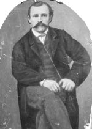 | Теодор Тамм |
| 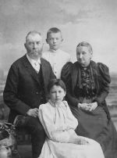 | Карл Карлович и Любовь Пантелеймоновна Краузе с детьми Марусей и Сашей Елисаветград |
| 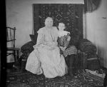 | Любовь Пантелеймоновна Краузе с внучкой Людмилой Гар 1910(?) |
Прабабушка - Любовь Пантелеймоновна Афанасьева - замужем была дважды, и оба раза за немцами.
Первый ее муж, Теодор Тамм, был выходец из Саксонии, ремесленник.
Сохранились его фотография и фотография надгробного памятника. Надпись на нем по-немецки: от жены и детей. Детей осталось трое: мальчики - Женя и Федя, и девочка Вера - моя бабушка. (От нее я слышала, что был еще Андрей, но умер ребенком).
Лёня Верещинский, сын Иры Тамм, который пишет под псевдонимом Вернский, знает несколько больше. Последняя по времени публикация - в книге "Капица. Тамм. Семенов." Перепечатывать я не буду: его статья вполне самодостаточна и очень информативна, причем рассказывает не только о далеком прошлом. У меня глава о дяде Горе - еще впереди.
Недавно я обнаружила бабушкино свидетельство о браке, там она названа "дочь германского подданного".
Второй муж прабабушки, Карл Карлович Краузе, был тоже немцем, но вполне обрусевшим. От этого брака было двое детей: Маруся и мальчик Саша.
От прабабушки и Карла Карловича (мама звала его дедушкой) осталось много фотографий. Они у меня: толстый альбом мама отдала мне при жизни.
В последний год маминой жизни я часто расспрашивала ее о детстве, о "бабушке и дедушке" и многое по свежим следам записывала.
Прабабушка была дочерью херсонского помещика, кончила институт благородных девиц, у нее была в Елисаветграде собственная фабричка с.-х. машин, - по всей вероятности, от первого мужа, но уверенной в этом я быть не могу.
Прадед Карл Карлович служил фабричным инспектором. По маминым словам, его любили рабочие, интересы которых он защищал, и не любили предприниматели. Сохранилось от него, кроме фотографий, несколько открыток, адресованных маме. В основном из-за границы: он ездил с дочерью Марусей в 1910 году в Западную Европу. Это было уже после Костиного рождения, а Костя родился 7 ноября 1910.
Из маминых рассказов. "Бабушка очень любила нас, старших внуков (т.е. Муню и Гору. Мне жаль, что ты ее не могла знать: очень интересный человек была". - И очень добрая? - "Ну нет. Это дедушка был добрый. Очаровательный был человек. Дядя Поля тоже. А у бабушки был боевой характер. Командирша! Она часто бушевала, а дедушка ее легко успокаивал. Он ведь маме был не родным отцом, а относился замечательно".
В 900-е годы прабабушка жила в Полтаве, на самой окраине, и внуки часто проводили у нее лето.
| 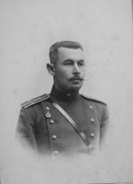 | Павел Пантелеймонович Афанасьев (дядя Поля) Январь 1900г. |
Упомянутый "дядя Поля" - ее младший брат, Павел Пантелеймонович, кадровый офицер. Он был холост и очень привязан к племянникам, в том числе внучатым.
Были у них [т.е. у Любови Пантелеймоновны и Павла Пантелеймоновича, еще две сестры: тетя Маша и тетя Анюта (мама тоже их так называла).
Писем от того времени сохранилось мало, о чем ниже. И я думала, что от этого поколения остались только фотографии.
Но оказалось, что в бабушкиных альбомах с открытками (один из них у Любы) целый клад: на открытках автографы прабабушки, прадеда Карла Карловича, тети Анюты, дяди Поли...
Из маминых рассказов. "Тетя Анюта вечно получала наследства, все по маленьким городам. Проживут - и еще одно получат. Она курила, играла в карты. К нам приезжала, - папа был доволен, ему разнообразие".
Была она бездетна, "проживала наследства" с мужем, Рогалевым. Мама говорила: в семье считалось, что Мила похожа на тетю Анюту (безалаберностью).
К другой прабабушкиной сестре, тете Маше, этого иронического отношения не было. Ее муж, Петр Иванович Кесслер, был мелкий фабрикант. Их дочери, Рита и Лиза, фигурируют в бабушкиных альбомах и в переписке мамы с дядей Горой (1908-11) довольно часто.
Тетками их не звали, просто по имени, как и тетю Марусю. Об этих младших маминых тетках - позже, пока вернусь к прабабушке.
Открытки ее обычно без даты, посылались в конвертах. Почерк неразборчивый, но почерк образованного человека, хотя грамматические ошибки попадаются (у других, чьи письма сохранились, - никогда, такое было время).
Открытки, адресованные маленькой Миле, обычно с пошловатой картинкой и с текстом применительно к возрасту. "У Пирата один глаз голубой, а другой карий, он уже лает и рычит на чужих". (Щенок назван Пиратом, конечно, по просьбе внучек, как будет видно из дальнейшего. И у нас в Бродокалмаке тоже был Пират, мама назвала в память того, из своего детства). Благодарю тебя за салфеточку. Значит, ты не ленивая, как папа говорил. А вот Бридж и Рыжий очень скверно себя ведут, они вчера придушили самых лучших кур, так что я решила отдать Бриджа охотнику, пусть охотится за дичью..." (Бридж был породистый пойнтер).
А вот маме: "Дорогая Муня. Поздравляю тебя с днем рождения, дай Бог, чтобы ты была здоровая и счастливая. Как идут твои занятия, когда мама думает отдать тебя в гимназию, после рождества или после каникул, с кем ты занимаешься. Как тебе нравится Воронеж... Есть ли у тебя учительница, много ли придется тебе догонять... Напиши, какой ты хочешь иметь журнал, и я вышлю деньги в редакцию... Я думаю, что Юная Россия для тебя слишком детская. Или может быть ты хочешь вместо журнала получить прямо деньги и купить себе сама что-нб другое... Посылаю тебе квитанцию на Огонек, из которой ты видишь, что деньги я послала еще 20 декабря. Если ты до сих пор не получила Огонька, то пусть папа справится у сторожей окружного суда, так как я не знаю адресса вашей квартиры, назначаю адресс: окружной суд на имя папы...
Очень рада, дорогая Муня, что ты выдержала экзамены. Трудно верно тебе учиться в министерской гимназии, но Бог даст, скоро весна, каникулы, и ты окрепнешь. Целую тебя крепко, будь здорова, мое дитя. Твоя любящая бабушка."
"...Неужели ты так занята, что тебе некогда написать мне двух строчек... Получила ли ты хотя один номер Исторического вестника, у нас уже в Полтаве получены два...
Я не сержусь на тебя, но меня сильно обидело твое молчание, когда я тебя просила написать по поводу маминой болезни, что меня сильно беспокоило, но ты ничего не ответила. Очень было больно."
(О министерской гимназии. Считалось, что в частных гимназиях требования были менее жесткими).
Видимо, в Елисаветграде прабабушка жила до 1903 или 1904 года. В 1904 году Карл Карлович служит фабричным инспектором на станции Лещиновка Харьковской ж.д., а в 1906г. они живут уже в Полтаве. Моя бабушка с детьми продолжала бывать в Елисаветграде, теперь уже у Кесслеров. Спаянность этой семьи - сестер и брата - очень сильна. Все часто ездят в гости друг к другу, а о переписке и говорить нечего.
Письма же дяди Поли - действительно свидетельство его "очаровательности". В частности, это открытки, которые он регулярно писал маме и (5-летней!) Миле с русско-японской войны. (Был он и ранен, Любовь Пантелеймоновна сообщает: "Сегодня получила телеграмму, что дядя Поля ранен в правую руку 17 февраля, на неделю уехал в Мукден, а там обратно в полк").
Так вот, его открытки. "Не напишешь ли ты мне, дорогая Муня, где вы будете это лето? Если помнишь, тогда у бабушки на даче мы все уговаривались встретиться вместе на Кавказских водах, насколько изменились эти мечты?
Целую всех крепко. Павел (нрзб). 24/V 05. д. Сан-Лунь-Шань".
"Теперь здесь, дорогая Милюся, так же жарко, как было летом у бабушки, а дальше, говорят, еще жарче будет..."
"Так как теперь у нас телеграммы идут иногда даже медленнее, чем письма, то я и порешил посылать о себе коротенькие весточки в этом роде... 1/VI 05".
(Миле): "А с тобой поделюсь своим опытом: коли у тебя не будет совсем чернил, а писать нужно, то возьми чернильный карандаш..."
Опять Миле: "Как ты думаешь (нрзб) за ужином... редис, холодная ветчина, язык и бифштекс и макароны, то можно ли назвать таких людей голодающими?..
10/VI 05. д. Шимиту".
"Совсем бы хорошо жилось бы мне, если только писали бы еще хоть изредка мои внучата, а то совсем они меня забыли, хотя нет еще и года, как мы виделись. Что ты на это скажешь, Мила?.. 20/VI 05".
"От Саши узнал, что вы держали экзамен в гимназии, дорогая Муня, от души поздравляю тебя и желаю блестяще окончить гимназию... а это не трудно, если ты с самого начала будешь хорошо учить все уроки... 1/VII."
"Мы здесь жаримся наверно не меньше, чем Вы там у себя на Кавказе, милая Мила, кроме того и паримся. Воевать совсем не воюем, а потому ужасно скучаем... 1/VII 05".
В 1909г. из Кременчуга: "Был в Киеве, хлопотал устроиться там... да кажется ничего не выходит".
Позже: "Скоро для нас начнется летняя страда: 25 мы уже выезжаем в лагеря в Чугуев, где пробудем до самого конца августа".
Что было дальше с Павлом Пантелеймоновичем, не знаю. Есть фотография военная, групповая, где он - уже полковник - с другими офицерами.
Нам (думаю, что не только мне) подсознательно казалось, что все бывшее до революции было как до потопа: ничего не осталось, все началось заново.
Прабабушка умерла в 1923г.
Вот и все об этом поколении. Мне кажется, что моя мама во многом была похожа на Любовь Пантелеймоновну (не внешне).
Перехожу к следующему поколению. А с этим жалко расставаться.
| 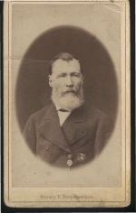 | Лукьян Михайлович Гар (1877г.), Фотография подарена сыну Ивану в 1882г. |
| 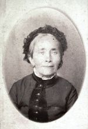 | Софья Моисеевна Гар (Миргородская) Екатеринослав ноябрь 1889г. |
| 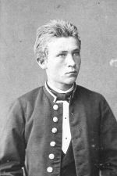 | Аркадий Лукьянович Гар Екатеринослав |
Аркадий Лукьянович, мамин отец, служил следователем, потом мировым судьей, членом суда. Я спросила однажды маму, не мешало ли ей после революции дворянское происхождение. Мама ответила: "Надежда Константиновна заступилась". Это подтвердилось документально. Есть собственноручная записка Н.К.Крупской, что отец мамин был не какой-нибудь помещик, а служащий и у него не было "ни кола, ни двора".
Было их [т.е. Гаров] пять братьев и сестра. Происходили из Екатеринославской губернии, учились все без помощи родителей. Об их родителях, т.е. о своих деде и бабке, - я всегда думала, что мама вообще не знала ничего, потому что не упоминала их никогда. Но на родословном древе, которое рисовала Любина подруга с маминых слов задолго до маминой смерти, показаны: Лукьян Михайлович Гар, поручик, которому пожаловано дворянство, и его жена Софья Миргородская, правда, без отчества и дат жизни.
Теперь я знаю значительно больше и даже располагаю документом. Оля Гар, внучка Егора Лукьяновича Гара, т.е. наша троюродная сестра, с которой Таня Гар познакомилась несколько лет назад (значительно позже маминой смерти), рассказала многое и подарила "копию с копии" этого документа.
Изложу его суть. В 1850 году Екатеринославское Дворянское Собрание слушает дело о внесении подпоручика Гара, 32 лет, в Дворянскую родословную книгу. Недвижимого имения не имеет. Вступил в службу унтерофицером в 1836 году. Произведен прапорщиком за отличие противу горцев, был в походах и делах противу горцев в 1842, 1843, 1844 годах. Оглашаем или изобличаем в неприличном поведении не был. На сие дворянское достоинство выдать ему Грамоту с раззолоченными украшениями. (Конечно, документ гораздо обширнее).
Оле по рассказам ее деда известно: отец Лукьяна был Наполеоновский воин, оставшийся на Украине и женившийся на украинке.
Родители Лукьяна погибли трагически: замерзли. Лукьян вырос в сиротском доме; женился на княжне (?) Миргородской.
Из сыновей Лукьяна Гара - трое врачей, два юриста (эти сведения снова от мамы). Всегда помогали сестре, которая была замужем за пьяницей, даже купили ей дом. Сестру звали Елизавета, как указано на древе, фамилии мама не помнила, да и видела ли когда-нибудь эту (родную) тетку? Т.е. и в те времена родственные связи не всегда бывали такими, как - например - в семье Афанасьевых.
Были у деда богатые двоюродные братья (например, знаю из открыток, что в Харькове жили Алексей и еще Лида), дед иногда к ним ездил, но бабушка не ездила никогда, - это мама всегда особо подчеркивала.
Из 5 братьев: Михаил, Егор и Евгений были врачи. Егор Лукич (отчество варьировалось; теперь я знаю причину и позже объясню) служил в подмосковном Богородске (ныне Ногинск) врачом для бедных (это официальное название должности). Мама ничего не знала о нем, кроме того, что помнила с детства.
В 60-е годы мама немножко общалась со своей двоюродной сестрой Шурой Орловской, дочерью Ивана Лукьяновича.
Ее рассказ трансформировался в мамином восприятии так:
"Вскоре после революции кто-то из родственников или знакомых, будучи в Богородске проездом, увидел огромную похоронную процессию: хоронили доктора Гара, "весь город хоронил"."
Так и было на самом деле, но только значительно позже: в 1948 году. Был Егор Лукич гинеколог, "бабий бог". Внучке его Оле тогда было уже 15 лет. По ее словам, Егор Лукич женат был трижды. Первая жена Елена (на мамином древе без имени) умерла на эпидемии дифтерита в 1900 году, оставив дочерей Лидию и Валентину двух и трех лет. (У мамы на древе девочки есть, но имена не совсем верны).
Последняя жена - полячка, значительно моложе; прожили около 20 лет, однако уехала в эвакуацию, бросив мужа: "Ты старый, все равно не доедешь, сиди и жди немцев". Тогда к нему в Ногинск и приехали обе дочери с детьми. У Валентины две дочери, обе носят фамилию Гар: Ольга Эммануиловна 1933г. рожд. и Алена - 1928.
Отец их Эммануил Эпштейн арестован в 1937, вышел на волю еще до войны, с туберкулезом, без зубов. От туберкулеза и умер в 1975 году.
У Лиды сын Павел, тоже Гар, 1932г. рожд., живет в Ногинске, работает в Москве. Холост. С Олей связь тесная, но когда она вышла замуж, а Павлу не понравился муж ("простой человек"), то он полностью порвал с ней отношения, которые, впрочем, после смерти этого мужа возобновились.
Чтобы закончить об этой ветви, вернусь к Егору Лукичу.
Оля показала нотариальное свидетельство 1885г. о том что дворянину Георгию Лукьянову Гару, проживающему в доме отца своего по такому-то адресу (в Екатеринославе), выдана копия с протокола о присвоении отцу дворянства.
Нотариус Израиль Штейн, контора которого находится по такому-то адресу, сличил "эту копию с копией подлинника" и удостоверил верность. "Копия эта получена для подачи в Университет, а потому без марки".
О другом брате, Евгении Лукиче, сведения еще более противоречивые. По маминым рассказам, женат он был вторым браком на крещеной еврейке Розе. У меня есть и семейные фотографии. По словам Оли, отцу (или родителям? - ведь Софья Гар почему-то совершенно не фигурирует в семейных преданиях) не понравился брак с еврейкой, Евгению и Егору не понравилась реакция отца, - тогда они и изменили отчество на Лукич, в знак протеста и разрыва с отцом. Наличие фотографий в нашем архиве говорит о том, что Аркадий Лукьянович от своего брата Евгения не открещивался, хотя и остался Лукьяновичем.
Мама считала, что у Евгения Лукьяновича было две дочери, одна из них приемная. Про одну из этих дочерей я и раньше часто слышала от мамы. Звали ее Женя Поволоцкая (по мужу), работала она, как и мама, в Наркомпросе. Замужем она была дважды. Первый муж - некто высокопоставленный, второй (мама характеризовала его со слов своего отца, Аркадия Лукьяновича) - проходимец.
Сын Жени, Слава, фигурирует на мамином древе как Ярослав Поволоцкий. Он был ровесник нашей Веры. Мамины слова: "Они даже бывали у нас в Метрополе". Потом жили в Ленинграде.
На фотографии же супруги с двумя как будто девочками. Правда, тогда маленьких мальчиков обычно одевали в платье, но я думаю, что это действительно девочки, о которых говорила мама, а мальчик Александр, о котором мама не знала, родился позже.
У него были две дочери, Оксана и Ирина. Маргарита Сергеевна Баранова знала обеих, а со второй даже вместе работала, и рассказывала мне о ней ("Странная женщина!" - это Ритина характеристика). Но о нашем родстве не упоминала.
Обе эти сестры были как-то связаны с биологией и сельским хозяйством.
Они пытались познакомиться с нашим Костей, но не преуспели. Тогда люди зачастую избегали и более благополучных родственников, а что же говорить о Косте, жена которого сказала (мне): "А нам родственники не нужны, у нас друзья есть". Речь при этом отнюдь не шла о незнакомых родственниках, как в данном случае. Мама тоже на слова Риты о Гарах, которые хотели бы познакомиться, не реагировала никак. (Кстати. Папа писал маме из Княжпогоста в 1936 году, что она "не отличается людимостью").
Обе эти сестры умерли уже в 90-х гг. Остался сын одной из них, Саша.
В 1998г. Слава Гар, младший сын Кости, обнаружил ходящие по Москве списки жителей с адресами и телефонами, нашел там Александра Евгеньевича Гара и загорелся. Таня позвонила незнакомому Александру, поговорила. Впечатление у нее благоприятное. Я надеюсь еще с ним встретиться. Он рассказывал Тане о своем деде, тоже Александре Евгеньевиче. Кстати, все нынешние потомки Егора и Евгения носят фамилию Гар по своим матерям. Странное совпадение.
О судьбе и потомстве Михаила Лукьяновича я не знаю ничего. На древе три стрелки, обозначающие трех детей.
Больше других братьев был дружен с нашим дедом Иван Лукьянович, тоже юрист. Одно (недолгое) время, уже женатые, жили вместе, вели общее хозяйство. Служил Иван Лукьянович тоже на Северном Кавказе, поэтому бывали в гостях друг у друга. Есть фотографии. На одной оба семейства, впереди сидят две маленькие девочки, Муня и Шура. Очень разные и обе узнаваемы. Есть открытка маме от бабушки, из другой эпохи (1927): на дачу в гости приезжали "Лиза и Шура с мужем". Это жена и дочь Ивана Лукьяновича.
К Шуре Орловской (это ее фамилия по мужу) бабушка в 30-е годы заходила вместе со мной. Жила Шура на Гоголевском (Пречистенском) бульваре, в "стеклянном доме" (против Сивцева Вражка). С мамой она никогда не встречалась. Достаточно сказать, что во время войны она была эвакуирована в Челябинск и мама не делала никаких попыток с ней связаться, хотя в Челябинске мы бывали, даже я.
В старости Шура поменяла квартиру на Сухуми, там у нее побывала Люба. После этого визита Шура писала маме, что она рада Любе, почувствовала себя вновь молодой и рада написать большое письмо, поделиться воспоминаниями.
Рассказывала о своих братьях.
Самая причудливая судьба (особенно с точки зрения того времени, когда я писала эти главы, - Н.М.) у Анатолия. Он герой любимого маминого рассказа из их детства: бабушка напекла куличей, они остывали на подушке... "Приехал на Пасху дядя Ваня, дети устроили беготню, Толя бухнулся на кровать, - и пришлось маме снова ставить тесто и печь новые куличи".
Этот же Толя был случайным гостем на маминой первой свадьбе. "Свадьбы в общем и не было. Гора принес торт. А Толю мы с Вадимом встретили случайно и затащили к нам в полуподвал".
Возвращаюсь в более позднее время. Толя эмигрировал и будто бы был дьяконом в Канаде, а его сын в Италии.
Конечно, мама впервые узнала об этом от Шуры в 60-е годы. В письме Шура не упоминает, где именно живет Анатолий. Он чувствует себя "там" чужим, пишет сестре два раза в неделю. "Сейчас" он находится в доме отдыха для ветеранов 1-й отечественной войны, к его услугам лучшие госпитали, но Шура посылает ему иногда лекарства, в том числе валериановый корень, из Сухуми.
К сожалению, из-за почерка я поняла не все, но самое интересное, что в 1987 году, когда я впервые это записывала, я не сразу поняла, что такое 1-я отечественная война, а лишь позже приписала: первая мировая.
Из других братьев Шуры - Игорь Иванович бывал у мамы на Метростроевской в последние годы своей жизни, но я ни его, ни жену его ни разу не видела. Еще был Вадим, как-то пострадал в 1937г. (знаю из тогдашних Милиных писем к бабушке), но остался жив (знаю из упомянутого письма Шуры от 1968 г.). Мама ошибочно называла его Всеволодом (на древе и на фотографиях, которые мы с мамой надписывали).
Теперь о самом деде. Лучше всего его характеризуют его письма.
Маме, на открытке с сельским пейзажем: "Ты, Муня, хотя и не помнишь Пришиба, но эта открытка мне напоминает его, поэтому я ее и посылаю тебе.
Целую тебя. Твой папа". (О Пришибе далее).
Бабушке, октябрь 1906 (вероятно, из Воронежа): "Не знаю, Вера, почему от тебя до сего дня я не имею ни одного письма, неужели так трудно написать и тем не заставлять меня беспокоиться о Вас?
Сегодня сидел в камере и подписывал бумаги, а затем смотрел еще две квартиры, но с хозяевами увижусь завтра. Такая на душе тоска, что не знаю, что с собой делать. Когда приедешь? Если найму квартиру, телеграфирую. Целую всех.
Денег я еще не получил, но ты напиши, если тебе надо, и я вышлю".
"1/II 917. Воронеж.
Наконец, дорогая Вера, мы вчера получили две твои открытки, одну с какой-то станции, а другую из Москвы. Живем мы без тебя помаленьку и пока-что справляемся, а что будет дальше, когда выйдет запас мяса, не знаю: говорят, что мяса совершенно нет. Впрочем, это не так уж страшно: как-нибудь обойдемся. Костя до вчерашнего дня гулял, но вчера, когда я был в суде, он, гуляя, так вымазался в снегу и промочил ноги, ботинки и чулки, что я его сегодня уже не пустил и сказал, что без меня он гулять не будет. Ведь Милка - совершенно непригодное ни к чему существо и присмотреть ни за чем не может. Все время у нас держатся холода и когда отпустят, нельзя и предвидеть. Как же ты устроилась? Воображаю, как испытываешь и холод и голод?! Не сиди долго, а приезжай скорее: все скучаем. Целую тебя крепко, крепко. Твой А.Гар."
Далее печатными буквами: "Дорогая мамочка отчего ты мне не пишешь Мила ходила сегодня в гимназию Целую всех Твой Костя".
Письмо это я отдала Косте, когда была у него буквально за несколько дней до его смерти.
Комментирую. Косте было 6 лет. А бабушка поехала в Москву, т.к. должна была родиться Вера. Родилась она 9 февраля, по старому стилю 27 января. Видимо, сообщения об этом дед еще не получил.
Но отсутствие каких-нибудь слов вроде "привет Муне" и вообще упоминания о ней не случайно. Дело в том, что дед был против маминого замужества - из сословных соображений. Мама рассказывала: его возмущало, что Вадим Васильевич - "сын какого-то учителишки". Мама всегда отзывалась о своем отце сдержанно, говорила о его жесткости (но унаследовала от него, мне кажется, многое).
К бабушке он относился хорошо. Мне запомнилось с детства, как однажды бабушка мне сказала: "Не могла понять, почему у меня сегодня плохое настроение, но вспомнила: годовщина дедушкиной смерти".
(Умер дед в 1919 году, а разговор был лет через пятнадцать).
Из рассказов мамы. "Отца все время переводили из одного места в другое. Я все помню. Служил в Ленкорани, потом перевели в Пришиб, туда ехали на пароходе". Затем - рассказ об охотничьей собаке Пирате, слышанный мной еще в детстве от бабушки. Дед решил оставить Пирата знакомому, но запертый в сарай пес сделал подкоп, прибежал в порт, поплавал вокруг одного парохода, подплыл к другому (правильному), но не мог, естественно, взобраться. Пассажиры уговорили капитана, тот разрешил взять пса, и больше дед с ним не расставался.
"Потом жили в Шемахе. Там у нас был повар-татарин. Родители пошли в гости, а я проснулась, у меня поднялась температура, я бредила и страшно испугалась повара, стала кричать. Он в испуге побежал за мамой". - Я спросила: разве там нельзя было найти русскую няню? - "Русские были, молокане. Но вот держали почему-то повара".
"Потом жили в Медвежьем, Ставропольской губернии, там родилась Мила. Помню, там сплошь цвели тюльпаны. Долго жили в Геокчае, года четыре, оттуда отца перевели в Баку по его просьбе: его замучил ревматизм. Переезжал на телеге вброд горную реку, вода ледяная. Ему часто приходилось ездить на вскрытие: на Кавказе ведь убийства очень часты. Он тогда был следователем. Ездил обычно верхом, со стражником. Брал с собой охотничье ружье, привозил фазанов. Среди его друзей охотников не было. После Пирата была собака Ральф, неудачная: отец не сумел выдрессировать. Он очень любил цветы, сам разводил. Квартира всегда была с садом. Отец все время возился с цветами. Мила не любила ничего делать. Отец перестал на нее воздействовать, смотрел как на пустое место."
"Отец ходил к знакомым играть в карты. В Баку был чиновник Архиев, пожилой, седой. Купил маме цветы, мама на него замахала: отец был очень ревнивый. А ребята ведь все замечают" (это о себе).
От себя добавлю. Есть несколько открыток от Ахриева, и не только поздравительных. Например: "Милая Муня! Извини меня, что я уехал, не простившись с тобою. С.Ахриев". Писал и позже, в Воронеж.
В Воронеже прожили несколько лет, там мама кончила гимназию, там позже умер дед. Мама сама в последние годы жизни удивлялась, как хорошо она помнит Воронеж.
"В Воронеже был Митрофаньевский монастырь, там были мощи святого Митрофания. Перед экзаменом принято было туда ходить. Один раз я встретилась там с начальницей, она меня очень похвалила. Она была, конечно, очень религиозна.
Моя подруга Шура жила у тетки в монастыре: родители ее жили в губернии. Какой-то необычный был монастырь, у монашек отдельные кельи, и вот племяннице можно было жить.
... В гимназическом дневнике были талоны. Чтобы пойти в театр, нужно было заполнить талон, поставить гимназическую печать. Это была цензура, не на все спектакли можно было. В Воронежском театре была постоянная труппа. Но не совсем постоянная: каждый год менялись по договору. И на гастроли часто приезжали".
Окончив гимназию, мама поехала в Москву, на Высшие женские курсы.
| 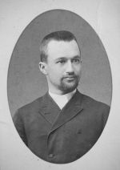 | Евгений Федорович Тамм С.-Петербург 27.8.1892 |
| 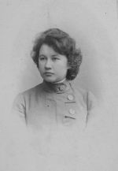 | Мария Карловна Краузе С.-Петербург ноябрь 1901г. |
Начинать о бабушке для меня трудно, поскольку не обойтись без собственных впечатлений, а значит - оценок. Начну с задачи более легкой, с ее братьев и сестер.
О Евгении Федоровиче очень подробно написал Леня Верещинский (Вернский), его правнук. Поэтому за объективными сведениями отсылаю всех возможных читателей к его статье. Я видела "дедушку Женю" несколько раз, когда он бывал в Москве у дяди Горы. Может быть, как раз в это время мы снимали дачи по соседству (это было дважды: в 1933г. под Звенигородом и в 1936г. в Софрине). Когда я познакомилась с "архивом писем" (мамино определение), у меня возникло впечатление, что бабушка относилась к брату очень сдержанно. Вера подтвердила - по собственным воспоминаниям, а ведь она была старше меня на восемь с половиной лет и вдобавок очень "приметлива".
Второй брат - Федя. Есть фотография с женой и сыном. На этой фотографии он очень красив. Еще есть упоминание в мамином письме бабушке (1912 г.): "Если хочешь увидеться с Федей...". Согласно древу, он умер в 1914 г. от туберкулеза. Никаких следов дальнейших контактов с его сыном Борей у меня нет.
Младшие - Маруся и Саша - были очень дружны между собой. Саша, кажется, был тоже медик. Жил в Киеве. Умер от тифа. Был женат, но детей не было, судя по завещанию тети Маруси. Она же умерла в 1968, прожив 87 лет. Если бы не сломала шейку бедра, прожила бы и дольше. Детей и у нее не было. Замужем была сравнительно недолго, фамилию носила двойную: Краузе-Павлова. Из людей, близких ей всю жизнь, известна Мария Максимовна Павлова - вдова Ивана Ильича, брата ее мужа. Уже в начале века (двадцатого) Мария Максимовна в переписке с бабушкой и прабабушкой.
Сам же муж, Михаил Ильич, кажется, был белым офицером и погиб в Гражданскую войну. Впрочем, о нем у нас никогда не вспоминали, и, может быть, я поэтому вообразила "худшее", чем было в реальности?
Тетя Маруся была врачом-гинекологом. Осталось удостоверение: "... прослушав полный курс СПб Женского Мед. ин-та, в Испытательной комиссии при названном Ин-те в 1908 году выдержала Удовлетворительно все экзамены на звание лекаря".
Осталась трудовая книжка. Стаж 13 лет до поступления в 1-ю горбольницу г.Новороссийска, а там с 1922г. сразу "заведывающей" (так тогда писали) родильным-гинек. отделением.
(Совпадение: в 1921г. тетя Маруся принимала новорожденного Игоря Верещинского, будущего мужа Иры Тамм.
В 1942г. отчислена в связи с расформированием больницы, связанным с военными действиями. Со слов тети Милы известно, что "куда-то Маруся была увезена в октябре 1943г.", а Мила "не могла и не хотела с ней ехать". Но знаю твердо, что несмотря на немецкое происхождение тети Маруси неприятностей после войны у нее не было.
(БОЛЕЕ ПОЗДНЕЕ примечание, 2001 года. Таня Гар кое-что знает лучше меня, т.к. ее мать была с ней откровеннее, чем моя со мной. Тетя Маруся на самом деле работала в немецком госпитале. Поэтому без "неприятностей" не обошлось. Отстоял ее тогда дядя Гора).
Далее, в 1945г. (ей 64 года): принята на должность хирурга заводской поликлиники, это уже в г.Смеле (перебралась ближе к родственникам).
В 1949: переведена на должность врача пастеровского пункта. Как долго она еще работала, не знаю. В 1957 пишет маме: работаю на инвалидской работе.
Поощрений в трудовой книжке тьма. Вплоть до такого: "за отличную работу и любовное отношение к делу премируется дополнительным двухнедельным отпуском"! (1939). Я никогда больше не слышала ни о чем подобном в реальной жизни, не встречала и в литературе.
Была она моложе моей бабушки на 12 лет. Бабушка ездила к ней (и к Миле) в Новороссийск почти каждый год - на месяц, в виде отпуска, бывало, что и на несколько месяцев. И мама чувствовала себя спокойной за бабушку: у Маруси и подлечится, и отдохнет, и подкормится.
Переписка с бабушкой у нее была постоянная. (И с киевскими Таммами. Потеря этой киевской переписки - невосполнимая потеря).
Только сейчас, в 1999г., я разобрала письмо тети Маруси (почерк у нее ужасный, типично врачебный), в котором она отвечает на бабушкино - о нашем отъезде из Москвы в 1937г. Сочувствует маме, сочувствует бабушке, знает, что помочь невозможно: "Сама все время боюсь". Утешает, что мой папа довольно скоро выйдет на свободу и жизнь наладится.
С начала войны тетя Маруся помогала бабушке деньгами и упорно звала ее к себе - в Новороссийск!
13 дек. 1941: "Вчера мы узнали по радио о замечательном провале фашистского наступления. Воображаю, какое у вас ликование!.. У всех нас теперь настроение улучшилось, начиная с освобождения Ростова".
13 февр. 1942: "...С болью думаю о Жене с семьей в Киеве и обо всех Павловых в Смеле".
16 марта: "...Достань шиповник и заваривай... Я думаю, можно выхлопотать тебе разрешение на въезд к нам в Новороссийск. Таня наверно летом будет на практике где-нибудь и тебе нельзя же оставаться одной. Чорт с ней с квартирой, а вещей наверно уже мало осталось... Джери все еще не привыкнет и пугается..." (это, видимо, о бомбежках).
Однако в конце мая: "Я тебя пока к себе не зову... м.б. к Муне?"
Нашу Таню тетя Маруся ценила за преданность бабушке. Помню денежный перевод, 200 руб., уже тяжело больной Тане (Таня была в больнице, поэтому получала эти деньги на почте я). Текст примерно такой: "Ты одна не бросила бабушку...".
Поскольку Костя был на фронте, а мама уехала (в 1937г.) отнюдь не по своей воле и вернуться не могла, острие этой похвалы направлено против Веры, уехавшей в эвакуацию с Тимирязевкой.
Из письма Тане 24 марта 1955г.
"Дорогая Танюша! На-днях узнала о том, что ты несколько месяцев болеешь... Не падай духом. Эта болезнь излечима, надо только подбадривать себя и не нервничать, так как на состояние здоровья влияет нервная система, психика... Это знали мы, старые врачи, в допавловский период уже, а теперь получилось научное подтверждение.
Если у тебя будет время и желание, то напиши мне о своем здоровье и всех Ваших, где кто находится и что делает. О маме и Ефиме Ильиче и Любе я знаю. А как Вера, Костя и Надя?.."
В 1957г. - утешает маму, узнав о смерти Тани: "Когда-то О.М. (это мать дяди Горы - Ольга Михайловна) мне писала, что: Не говори с тоской их нет, а с благодарностью были... Как твой внук поживает?"
(Я не сразу дозналась, что это - "Не говори с тоской" - цитата из коротенького стихотворения Жуковского).
Есть несколько писем маме от 1964-66. Радуется, что мы получили квартиру. "Вот будешь скучать без них. Зато Надя будет жить самостоятельно".
Делает маме "отеческое внушение", что она не бережет здоровье и работает "на стороне": это в ущерб домашним и себе. "Можешь разгрузить Ефима Ильича от хождения по лестницам и уделить больше внимания внукам".
Удивлялась своему долголетию: "У нас все умирали после 70 лет, только дядя Женя прожил больше 80".
Не могу не привести завещания (в сокращении).
"Все мое движимое имущество и кошек завещаю моей племяннице Гар Л.А. Из числа облигаций передать Павловой М.М. 5 облигаций по 20 руб.
Внукам моего племянника Тамм И.Е.: Лёне, Марине, Никите и Саше по 1 облигации в 10 руб. Внукам моей племянницы Смушковой М.А.: Илюше и Игорю по 1 облигации 10-руб. достоинства. Сыну моего племянника Гар К.А. Славе 1 облигацию 10-руб. достоинства - всем от прабабушки... (Далее Павловым и Чевгус - не знаю, кто это).
Если Гар Л.А. найдет возможным, то пусть поделится вещами с М.М.Павловой. 14/II 64".
(Второе завещание отменило первоначальное "ввиду изменения моего бюджета" в июне того же года).
Дядя Гора посылал ей деньги до конца. Впрочем, это уже о нем, а не о тете Марусе.
До самой смерти была она умной и волевой. Через таких людей, мне кажется, и осуществляется связь времен.
Теперь об ее двоюродных сестрах - Рите и Лизе. Цитирую маму (т.е. мою запись устных рассказов мамы).
"Они обе работали учительницами в частных гимназиях. Вели светский образ жизни - ездили по балам в клубах. А Маруся не ездила. Приезжали к нам в гости, катались с мамой верхом. Рита не слезала с коня. Она вышла замуж за офицера, а Лиза - за учителя гимнастики...
Рита менее красива, волосы у нее были черные, вьющиеся, а у Лизы пепельные".
Обе сестры вышли замуж в 1909г. Мама и дядя Гора в своей переписке с большим интересом это обсуждают. Есть открытки от Лизы, путешествующей с мужем по Европе, а Рита вообще писала бабушке часто. Муж ее, сын подполковника, по фамилии Магденко, писал бабушке, представлялся как "новый родственник". Он служил после женитьбы в Хабаровске ("Через два года можно в Россию в отпуск").
Далее их следы теряются.
| 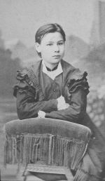 | Вера Федоровна Тамм |
| 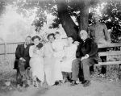 | В центре Вера Федоровна Гар с Костей и Милой. Слева Саша(?) и Маруся Краузе. Справа Карл Карлович Краузе и Павел Пантелеймонович Афанасьев Полтава 1911 или 1912 г. |
| 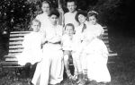 | Вера Федоровна с племянниками Горой, Лёней, Таней Таммами (1900-е годы) |
Главное мое впечатление - строгость. Как я теперь понимаю, меня бабушка не очень любила (и мама подтвердила это), но строга она была не только ко мне.
Года 2-3 до смерти мамы и Кости между нами (Костей и мной) был разговор, в который он вовлек меня, заставил высказаться - и присоединился к моему мнению: бабушка подавляла. Да и мама в возрасте 16-17 лет писала дяде Горе, с каким трудом ей удается отстоять в битве с родителями какие-то кусочки самостоятельности.
Но жизнь бабушки сложилась так, что несмотря на характер она не могла распоряжаться собой. Окончила гимназию, вышла замуж (не сразу, только в 23 года, а о промежуточном времени я не знаю абсолютно ничего. Теперь уже и нет надежды узнать).
Младшая сестра Маруся, младшие двоюродные сестры - учились, служили. Бабушке же работать "по найму" пришлось год-два, уже на шестом десятке. Об этом я впервые услышала от Кости в последний год его жизни: овдовев, бабушка работала завхозом в больнице. Но оставалась в Воронеже после смерти деда очень недолго: в начале 1921г. она уже в Москве, торопилась успеть к Таниному рождению (Таня родилась 10 февраля).
Моя мама - старшая дочь. Когда она родилась, бабушке было почти 25 лет. Мама родилась в Елисаветграде. Бабушка приехала туда специально для этого случая - к своей матери. Семейная же жизнь ее первое время шла где-то в глуши, где служил дед, - его часто переводили по службе. Через 7 лет после мамы родилась Мила, еще через 10 - Костя.
Из маминых рассказов о детстве:
"В Геокчае был нотариус-мусульманин. Приезжал к нам в гости. (Это о национальном вопросе). В Геокчае православная церковь была - просто двухэтажный дом. Отец в церковь ходил только в царские дни. Мама не ходила никогда". (Вот это для меня загадка - откуда такое вольномыслие? - Н.М.).
"Когда приехали в Баку, я ходила в гимназию в матроске, а не в форме. Мама была больна, а шила она сама. Начальница каждый раз делала мне замечание. Я чуть не ревела, я сама человек порядка.
Гимназия называлась "заведение святой Нины"...
... Я заболела дезинтерией. Один из амбалов (грузчиков) был болен, и я заразилась. Заболела в дороге и полгода болела у бабушки в Полтаве. Мама была со мной. Я так ослабела, что не могла ходить. Но я ни одного года не пропустила. (Почему были так твердо уверены в источнике заразы, я не совсем понимаю).
У отца всегда была собака. У нас - птицы: у Милы щегол, у меня чижик. Щеглы злые. У меня были куры. Я их кормила, они меня знали. Когда иду из гимназии, они уже слышат. Летят на плечи, на шапку. Мама сердилась".
Первое хронологически письмо, сохранившееся от бабушки, адресовано Вадиму Васильевичу Смушкову, будущему зятю, а в то время претенденту.
В противоположность своему мужу бабушка сразу взяла его сторону.
Когда я писала о деде, несколько страниц назад, я процитировала маму: "Ребята ведь все замечают". О себе я не могу этого сказать, а полученное мной странное воспитание никак не могло обострять наблюдательность. Но все же я отчетливо помню, как Вадим Васильевич целует руку бабушке, а я при этом думаю: "А ведь бабушка его любит больше, чем папу, и жалеет наверное, что они с мамой разошлись". Думаю и сейчас, что это так и было. К моему папе бабушка хорошо относилась (как и все его знавшие), но сердечности не было. Я видела, что дело не только в манерах (папа, конечно, рук не целовал), а именно в отношениях. Впрочем, Вадим Васильевич и со мной был очень ласков, и я его любила.
Однако, вернусь еще на 20 лет назад, к письму. Оно без даты.
"Думаю, Вадим, что после тех нескольких дней, проведенных у нас, Вы не можете бояться, что я могу сказать что-нибудь против Вас. Не знаю, чутье ли матери это, но только я сразу поверила, что Вы любите Муню действительно серьезно и что дурного она от Вас не может ничего ожидать. Я сразу почувствовала к Вам доверие и рада, что в Вас она найдет не только мужа, но также товарища по любимой работе и друга, что действительно так редко между супругами. Но все это впереди".
Далее бабушка советует не торопиться, "стать на ноги", тк материальная сторона тоже очень важна.
"Так что лучше, друг мой, не настаивайте теперь же на браке. Вы конечно одержите верх, Муня подчинится... и не посмотрит на то, что я не сочувствую поспешности, а то, что муж мой говорит, на нее вовсе не действует. Он вовсе не против брака с Вами, а против поспешности. По свойственной всем мужчинам (в его возрасте) грубости, он выражается резко, но он очень беспокоится о Муне... Он сам испытал нужду. Знает, как трудно работать и учиться... У него есть племянник, который бесконечно сидит в политехникуме, а другие и вовсе бросили. Вы скажете, что с Вами этого не может быть. Но кто может поручиться даже за завтрашний день?!. Я хотела бы... чтобы брак Ваш состоялся не раньше, как в будущем году... У нас в роду все очень привязчивы и сживаются при таких условиях, каких другие не вынесли бы... Если же женитесь через год, Муня почти окончит. Останутся только государственные экзамены, Вы будете на 4 курсе, не так далеко от окончания... За год при старании, лечении и усиленном питании здоровье и Ваше и ее окрепнет... Теперь необходимо, чтобы оба (супруга) одинаково вносили в семью, тогда только будет равенство и можно быть уверенным, что материально семья обеспечена. Я из горького личного опыта знаю, что такое не вносить в семью своего труда, а зависеть от другого. И не желала бы, чтобы Муня испытала то же".
Конечно, ради этих последних слов я и стала цитировать это письмо; они характеризуют бабушку и ее жизнь. Но вот "не удержалась" и процитировала полписьма.
А мне, как (самозванному) историку семьи, очень повезло, что это письмо стало мне доступно. Ведь шансов на это было очень мало: оно адресовано Вадиму Васильевичу, повидимому прочитавшему, может быть, ответившему - а дальше что? Где, у кого оно хранилось?
Но цитирую дальше.
"Жаль, что Вам не пришлось быть дольше с нами и не поговорили мы, и я не знаю Ваших взглядов на жизнь, но не знаю почему я верю Вам, и мне кажется, что в Вас Муня найдет именно то, что многие из нас ищут и не находят..."
Бабушка ошиблась, мама не была в этом браке счастлива, хотя и признавала, что Вадим Васильевич очень ее любил. По ее словам, в нем недоставало твердости, т.е. он легко падал духом, а главное - он был очень вспыльчив. Об этом впереди.
Бабушкиного совета не послушались, поженились. Потом родилась Вера. Потом началась разруха, голод. Дед умер от воспаления легких. Мама рассказывала, что после его смерти бабушка встретила врача, лечившего Костю, и тот пенял: зачем бабушка не пригласила его к заболевшему мужу? "Я бы его вылечил". А не пригласила бабушка (по маминым словам) "потому что постеснялась". Это звучит странно, - но может быть не было денег заплатить врачу? Да деньги в то время и не стоили ничего.
Так или иначе, бабушка овдовела. Работала завхозом в больнице, потом отправилась с Костей и Милой в Москву к маме.
Мама жила в Метрополе, потом ее семья распалась, а бабушка как-то оказалась в 5-м (кажется) Доме Советов с обеими внучками. Потом Таня тяжело заболела, и бабушка жила уже с ней вдвоем, выхаживала ее. Таня всю жизнь считалась преимущественно "бабушкиной внучкой". Вера же называла бабушку на "вы" (как и Абрам, - но он-то не был родным внуком).
Мама с папой жили на Тверской, где и папина мать, Минна Нехемьевна, и папина сестра тетя Туня, и Абраша, а позже и Вера.
В 1928г. мы все перебрались в новую, кооперативную квартиру на Остоженке. Цель была - соединить (сборную) семью, поэтому квартира была двойная, из 6 комнат (одна из них - переделанная из кухни и "санузла", в ней постоянно слышались звуки спускаемой воды). Но где жил Костя, когда жил дома, - не только я, но и Вера не могла припомнить. (Писалось, когда Вера была еще здорова).
Было тесно, Абрам спал в столовой на кушетке и своего угла не имел. Абрам (теперь) и сказал мне, что Костина кушетка тоже стояла в столовой. На ней после возвращения из Бродокалмака спала я. Только Костя, по словам Абрама, ставил ширму, а я в мое время ловила момент, когда квартиранты проходят через столовую: ширмы не было.
Абрам, однако, жил в этой квартире не с самого начала, а с 1930 года. Какое-то время он жил у бабушки Минны Нехемьевны на Тверской, а потом его упекли на год в психлечебницу. Об этом позже.
Бабушка вела хозяйство. Родители, по моим воспоминаниям, приходили поздно вечером, ложились отдохнуть и, видимо, до ночи работали, за письменными столами. Конечно, всегда была домработница, а в моем детстве, до 4 лет, еще и няня (Дуня), и у Любы до 5-го года няня, но работы бабушке все равно хватало. Папа шутил, что надо бы ей подсунуть в карман шагомер, чтобы узнать, сколько километров в день бабушка "пробегает". (При этом она сильно прихрамывала - это результат перенесенного сразу после революции тифа).
Меня бабушка воспитывала, конечно, добросовестно, но методы ее были ужасны. Раньше я думала, что они определялись целиком бабушкиными принципами, но теперь считаю, что немалую роль играла нелюбовь именно ко мне. Учила же она Веру шить. Пела же с Клавдией старинные романсы. (Про романсы рассказывала мне Вера, я же не могу это пение представить: бабушка всегда была повернута ко мне одной стороной. Так же, как не могу представить бабушку верхом на коне, хотя о верховой езде слышала от самой бабушки).
Легко ли бабушке жилось? Конечно, ее сильно угнетало сознание, что она живет "на иждивении дочери". А после папиного ареста еще сильнее. "Ем Мунин хлеб," - я знаю об этих словах из ответного письма Кости, который успокаивал бабушку, что она ведь всю жизнь работала и продолжает работать.
Один раз произошла совсем скверная история: Любина нянька не то подняла руку на бабушку, не то нарочно треснула ее дверью. (Нянька тайком лакомилась вареньем, стоявшим всегда в "карельском шкафу" в родительской спальне. Бабушка оказалась свидетельницей. Я не знаю, случайно ли). Видимо, непосредственно после этого бабушка уехала в Новороссийск, к Миле, а вернее к Марусе. Ездила она туда и раньше, но ненадолго, а в этот раз - на несколько месяцев.
Уехала в феврале, дня за два до объединенного дня рождения Веры и Тани (который всегда праздновался), т.е. спешно. Отзвуки я нахожу в письмах.
В июне мама пишет: "В последней открытке ты пишешь, что приезд твой зависит от меня - позову тебя - ты приедешь. Странная постановка вопроса, с каких пор нужно звать человека ДОМОЙ. Если ты достаточно отдохнула, нужно возвращаться".
Другое письмо: "Дорогая мамочка, получила от тебя длинное и очень обидное письмо. Не знаю, откуда ты все это взяла. Почему ты решила, что я не хочу, чтобы ты жила у нас, что я тебя не зову потому, что ты мне не нужна и т.д.
Теперь относительно няни. Конечно, с осени с ней нужно расстаться. Старой истории вспоминать не нужно. Я понимаю, что тебе трудно забыть пережитое, но что же теперь делать? В отношении меня ты все же не права. Тебя я люблю, та история была для меня очень тяжела, но меня удивляет, что ты не понимаешь, что сделать я ничего не могла тогда..." (ПРИМЕЧАНИЕ. Почему же не могла? От мамы зависело в доме вообще ВСЕ. И еще бросается в глаза тон. НУЖНО возвращаться. НУЖНО забыть. - Н.М.)
В конце августа: "Когда же ты собираешься домой? Загуляла совсем!!" (этот оборот речи очень характерен для мамы).
Няньку уволили даже не осенью, а только после папиного ареста, т.е. после 7 апреля 1936г.. Таким образом, это было вынужденное увольнение, с бабушкиными чувствами мама в этом случае не посчиталась, даже вопреки прямому обещанию.
В августе 1937г. мы уехали в Бродокалмак, Абрам в Свердловск. Бабушка осталась с Костей и Верой. (Потом, в 1940 году вернулась в Москву Таня).
Бабушка писала маме много писем, организовывала посылки.
Потом война. Бабушка осталась вдвоем с Таней. Конечно, Таня очень любила ее и заботилась о ней. Но ее страшная вспыльчивость обращалась (естественно) на тех, кто в этот момент был ближе и беззащитнее.
Костя с фронта писал Вере: "Не позволяй Тане кричать на бабушку, это ее убивает". И самой бабушке: "Таня по существу добрый и отзывчивый человек, только ее душу испортили - замордовали". От себя добавлю: Костя прав, но на Танин характер, кроме причины, о которой он говорит, не могла не повлиять длительная тяжелая болезнь, перенесенная в детстве.
В 1937г. бабушка с живейшим интересом писала о выборах, причем каждому в отдельности: маме, Тане, мне. Потом, тоже еще перед войной, ходила на занятия по ПВО (противовоздушной обороне). Сокрушалась в письмах, что усваивает медленнее, чем более молодые. Во время войны писала Косте: "Пошла бы работать в госпиталь, да здоровье не позволяет". Дежурила на крыше во время налетов вражеской авиации. Костя писал ей: "Ты можешь гордиться, что в твоем возрасте участвовала в великой борьбе, а ты ведь активно участвуешь". А после смерти бабушки писал Тане: "Ты описала душераздирающие сцены голода, которые пришлось ей испытать перед смертью".
Болела бабушка несколько дней. Умерла 4 августа 1942г.
Приведу одно ее письмо (подлинник я отдала Косте, когда была у него последний раз перед его смертью).
"27 февраля (1939).
Моя родная и дорогая Муничка. Очень тронута, что никто не забыл о моем рождении, т.ч. вышло, как будто у меня в самом деле юбилей! Да, ведь 70 лет! Если бы я была большевичка и на производстве, то пожалуй и в герои труда попала бы? Ну да я никогда не искала почестей и весь век скромно исполняла свой "долг", как я его понимала. Много людей пробовали совратить меня с моего пути, но я шла черепашьим шагом и все же пользу приносила. Беда моя была в черепашьем шаге. Я не умела молниеносно действовать, а для теперешнего времени это главное. Вот и сейчас на курсах я отстаю от группы, конечно постараюсь сдать, но мне трудновато, другие быстрее все схватывают. Ну довольно об этом! Я физически чувствую себя для моих лет не плохо. Очень много молодых хуже себя чувствуют..."
Дальше бабушка дает маме советы, как она должна питаться, как вообще жить, (больше спать, больше бывать на воздухе, есть мясо), - конечно, советы наивные.
"Еще раз благодарю тебя за поздравление, только зря телеграмму прислала, все-таки лишний расход!..
У меня выпадают два дня в шестидневку, когда я не могу ничем другим заниматься, кроме учебы... Я ведь кунктатор и от этого много теряю..."
Что еще о бабушке? Была она абсолютно неверующей; не знаю, как это могло произойти.
ПОЗДНЕЙШЕЕ примечание, 2008 год. Разобрав после маминой смерти весь архив, я думала, что исчерпала все источники. Но после смерти Коли мне в руки попали мамины письма к Вере, из которых я много чего узнала: не столько фактов, сколько "нюансов". Об этом я в записках безусловно упоминаю. И вдруг сегодня, перевернув иконку (Богоматерь с Младенцем), хранившуюся при жизни Коли в Калуге, которую я несомненно держала в руках и раньше, я почему-то впервые обратила внимание на надпись на обратной стороне:
"4 февраля 1916 года.
Молю Господа о благословенiи моей дочери Марiи и Вадима.
Любимой дочери моей шлю мое благословенiе".
Это открытие поколебало мое убеждение в бабушкином абсолютном атеизме, хотя, конечно, всякое бывает.
Но продолжу.
Бабушка была абсолютно предана советской власти. Но при этом ее раздражало то, чтО позже назвали культом личности.
Доказательство у меня только одно, но вполне достаточное. Глядя на обычный в то время силуэт Ленина, частично заслоненный силуэтом Сталина (кроме таких двойных, печатались еще "четверные": Маркс, Энгельс, Ленин, Сталин), бабушка сказала мне: "И здесь Сталин загораживает Ленина". Это поразило меня тогда и продолжает поражать теперь. Такой разговор с ребенком, с пионеркой, был попросту опасен по двум причинам: дети чувствовали себя обязанными доносить о подобных вещах, а с другой стороны, я могла поделиться с подругами без всякой задней мысли, просто по глупости. И кто дергал бабушку за язык? Она вовсе не была несдержанной, наоборот. Вдобавок, у нее не было привычки делиться мыслями именно со мной (об этом я уже писала). Мы были в тот момент вдвоем, я приходила из школы раньше старших. Значит, припекло бабушку.
Вот письмо от бабушки, адресованное в Москву моим сестрам 20 февраля 1941.
Родные мои Татьяночка и Верочка! Что-то давно я не имею от Вас вестей! Как живете? Как здоровье? Как питаетесь? От мамы я получила не особенно давно открытку. Она пишет, что послала Вам в январе или в феврале 150 руб. Ну как обстоит дело со стипендией? Получаешь ли Ты, Верочка? или все еще она в проекте? Есть ли у Вас работа? Танюша, ты писала тогда о пуговках, как это дело пошло на лад? и сколько времени можно на это выкроить? О себе могу написать, что весь этот месяц я мысленно с Вами, хочется уже ехать в Москву, вот только жду денег от Кости на билет. Маруся так много денег затратила на мое питание, что мне даже неловко просить на билет. Ведь вместо двух я уже 4 месяца живу здесь.
16 февраля я выслала маме продуктовую посылку. Я весь январь и полфевраля собирала ее, наконец набрала и выслала: 1 кг пшена, 1 кг перловой, 1 кило фасоли, 350 грамм постного масла, 1 кусок мыла для стирки, 2 куска туалетного, 1 кило сухарей (мама просила), 2 катушки ниток, ножницы, 2 густых гребешка, вазелин, баночку мази для Любы, 2 свечи, немного конфект, пачку аптечной ваты. Часть пришлось вынуть. Вот и все. Только Е.И. (Ефиму Ильичу) я еще не выслала. На днях должно быть вышлю. И когда соберусь в дорогу окончательно? Верно уже в марте. Вышлю или оставлю Миле посылку для мамы.
Целую Вас, мои родные. Любящая бабушка. Пишите.
Похоронили бабушку на Ваганьковском кладбище (она часто говорила: вот когда свезете меня на Ваганьковское... Это и определило Танин выбор).
Могила была потеряна сразу же: стали хоронить вторым слоем, в другом направлении рядов. Это было военное время.
Мама перед смертью вспоминала как живых трех человек: бабушку, папу и дядю Гору.
О тете Миле писать нелегко. Начну с цитаты.
"Автобиография. Я, Людмила Аркадьевна Гар, родилась в 1900г. 18 августа в с.Медвежьем бывшей Ставропольской губернии в семье служащего. В 1906г. вместе с родителями переехала в гор.Воронеж, где в 1918г. закончила среднюю школу (бывшую женскую гимназию). В 1919г. по смерти отца поступила на работу в качестве конторщицы в Карточное бюро, где проработала год, а потом переехала к сестре в Москву. В Москве прожила по 1923г., работала в Политическом Управлении Р.В.С.Р. тоже в качестве конторщицы, в 1923г. переехала в г.Новороссийск, где закончила при Здравотделе курсы медсестер и поступила на работу в Городскую больницу в должности сестры. В горбольнице проработала по день эвакуации, т.е. до 18/V 1943г. В эвакуацию попала в с.Балаклею Киевской области и устроилась на работу в Балаклеевскую участковую больницу, где работаю и поныне в качестве медицинской сестры.
Л.Гар. 11/VIII-46г., с.Балаклея".
Мама тетю Милу откровенно презирала. Из ее уже предсмертных рассказов: "Мила училась в частной гимназии Кожевниковой. Самая плохая гимназия. Кто не приживался в других - отдавали туда. Мила была пройдоха: все подслушивала, высматривала. Она человек с неприятными качествами была". - Бабушка больше любила тебя? - "На каких весах взвешивать? Уважала меня больше".
На мой вопрос, как же тетя Мила могла закончить гимназию с серебряной медалью, если она уж такая никуда не годная, мама ответила то же: "Да ведь это третьестепенная гимназия!". Может быть и так, но во всяком случае писала тетя Мила абсолютно грамотно. (Хотя это не только от школы зависит, чему не счесть примеров).
Есть удостоверение (1919г.) с печатью "Частная женская гимназия М.П. Кожевниковой": "по окончании 7 классов прослушала одногодичные подготовительные, общеобразовательные курсы, учрежденные М.П.Кожевниковой по предметам Русского языка, Политической экономии, Алгебры, Геометрии, Тригонометрии и Латинского языка в полном объеме курса бывшей мужской гимназии".
Есть еще удостоверение 1923г.: "Центральная Школа Машинописи сим удостоверяет, что гр. Гар... пишет со скоростью 150 ударов в минуту, что согласно квалификации Экспертной Комиссии при Бирже Труда соответствует познаниям машинистки 2-ой категории".
Добавлю, что Михаил Кузьмич пробовал устроить Милу учиться в Горную академию, но она не захотела (мама ее за это порицала, но я думаю, что для себя мама тоже не желала бы такой судьбы. Однако я это воспринимаю так: ешь, что дают).
Из сохранившегося предвоенного письма к бабушке я знаю, что все-таки законченного мед.образования у Милы не было: она писала, что ее стаж 17 лет, а по закону сестры с более чем 15-летним стажем ПРИРАВНИВАЮТСЯ к имеющим среднее образование; но если потребуется, то она будет посещать курсы повышения квалификации.
Бабушке, т.е. своей матери, Мила писала постоянно, рассказывала и о своей личной жизни, очень непростой (постоянный ее "поклонник" был женат и притом на ее подруге), и о ссорах с тетей Марусей.
Началась война, Мила много работает, с Марусей уже не ссорится и временами у нее живет. И вот сообщение: "Собираемся с Марусей пойти к бабушке на могилку, но обе очень устаем..."
Я понятия не имела, что прабабушка похоронена в Новороссийске. Впрочем, это естественно, что она приехала доживать век у деловой и преуспевающей младшей дочери.
Писем 1942г. бабушка сохранила несколько. Конечно, война чувствуется: большая нагрузка на работе, нехватка продуктов, дороговизна на базаре, - но все это как в глубоком тылу; даже зовут бабушку приехать ("пропуск Маруся выхлопочет").
Потом эвакуация. После войны - туберкулез, инвалидность с 1949г. (пенсия 155 руб.!). Подлечивается, работает (зарплата в 1953г. - 475 руб.). Выйдя на пенсию, переезжает в Смелу, поближе к тете Марусе. Бывает в Москве.
Жить одной ей трудно. В 1955 году она писала маме в Сибирь, что тетя Маруся все болеет, а после ее смерти Мила хотела бы приехать к маме. Мама была в затруднении: и с Дьяконовой не уживется, и всегда жила на юге, морозов не переносит, а главное - не собиралась же мама оставаться там всю жизнь.
После смерти тети Маруси Мила скоро заболела и умерла. Заболела внезапно: склероз сосудов головного мозга - и психиатрическая лечебница.
Моей маме сообщает М.М.Павлова, свояченица тети Маруси, - сама очень больная и очень пожилая: Милу выписали было по ее собственной просьбе, но одна она жить не могла, хозяйка в панике, отправили снова в больницу, хлопотали о доме престарелых. Мила все помнила, всех узнавала, нормально разговаривала, но без ухода жить не могла, не могла элементарно себя обслуживать. "Константин Аркадьевич прислал 25 руб., одна знакомая согласилась проведывать Милу раза два в неделю, за каждое посещение она берет 30 коп. и 10 коп. на автобус..." (это 1970 г.). Сколько дней тетя Мила прожила в доме престарелых, не знаю: 12 марта еще неизвестно, в какой дом ее поместят, 29-го она уже там, в Балаклее, а 9 апр. она умирает. Что-то она завещала Любе и Тане, т.е. незамужним племянницам, но было ли официальное завещание, не знаю. Ездила туда Люба, ездил Костя. Для доказательства родства (по закону наследуют сестра и брат) Стефания Силовна свидетельствовала, что бабушка жила в "ее" доме на иждивении мамы (это истина).
Писать о Косте, конечно, веселее. Он родился, когда бабушке было почти 42 года, маме 17, Миле 10, т.е. мама годилась ему в матери. К новому 1986 году Костя послал маме открытку, которую Люба как-то замотала среди газет и обнаружила только после маминой смерти, а кажется мне, что и после Костиной. Он в этой открытке называл маму: "Наша общая мать".
Безусловно, идиллического в его жизни было тоже мало. В 8-летнем возрасте он полгода пролежал неподвижно с диагнозом - костный туберкулез. Ушибся, катаясь на санках. Я подозреваю, что диагноз был ошибочный, перестраховались. А может быть, в самом деле вылечили. Во всяком случае, следов никаких не осталось. Костя и отслужил действительную службу, и всю войну прошел. Кстати, в этом тоже редчайшее везение: все время будучи на фронте, он не был ранен ни разу. (Только своя лошадь однажды разбила ему ногу, - он служил в артиллерии).
О детстве его у меня мало сведений. После смерти деда бабушка работала завхозом в больнице (об этом я впервые узнала от Кости, а мама не помнила или даже не знала). Вероятно, это была единственная должность в ее жизни. Но мама вызвала ее в Москву к рождению Тани. Косте было 10 лет. Вероятно, он жил в основном по интернатам (тогда слово это не было употребительно, но интернаты были). По рассказу мамы, из какого-то детдома Костя ушел самовольно домой: там заставляли ходить босиком и в чем-то еще ущемляли. Будучи постарше, он учился на биостанции в Сокольниках. Там его учителем был натуралист Петр Петрович Смолин, которого вы застали еще активным (водил экскурсии по Подмосковью, очень многочисленные; мы раза два с ним ходили).
Сохранилась (не у меня, а у Тани Гар) фотография: Мичурин среди детей, наш Костя на первом плане, и именно босиком.
Сама я помню Костю совершенно взрослым юношей. Мне очень нравилось, когда он поднимал меня за локти - выше головы. Помню его в гимнастерке. Через много лет он подтвердил: конечно, комсомольцы обычно носили юнгштурмовки. О юнгштурме, возможно, расскажу, а юнгштурмовка - это была обычная гимнастерка, защитного цвета, с портупеей, от нынешних она отличалась отложным воротником, но такие носила тогда и Красная Армия - кажется, до 1942 года.
Институт Костя кончил в Ленинграде. Постоянно по экспедициям. Очень хорошо фотографировал. Занимался всю жизнь защитой растений. Начал работать в Институте инсектофунгицидов в конце 1934 года.
Как раз в это время бабушка надолго уехала в Новороссийск. Костя пишет ей: "Сплю я в твоей комнате, кушетка стоит у Муни". Уже в марте он едет в длительную командировку, в Ташкент и в глубинку, в погоне за саранчой оказывается в "Казакстане" (казахов официально называли тогда казаками), потом в Фергане.
На зиму, вероятно, приезжает в Москву, но весть о папином аресте в апреле 1936 застает его опять в экспедиции. Утешает в письме бабушку: "Думаю, что с Е.И. дело все же обойдется благополучно".
В то время еще верили в возможность благополучного исхода! Обещает помочь нам в материальном отношении, "но думаю, что не плохо бы, если бы ребята почувствовали, что деньги достаются недаром. Надо только, чтобы это отражалось не на питании, а на их затеях".
В следующий сезон Костя, видимо, в Краснодарском крае. Работает с луговым мотыльком. Узнает от бабушки о нашей предстоящей высылке. "Мне кажется, что и я и ты имеем право на площадь независимо от отъезда их семейства. Во всяком случае я настаиваю на своем праве на площадь, т.к. считаю себя совершенно независимым и АБСОЛЮТНО НЕ СВЯЗАННЫМ С МУНЕЙ НИЧЕМ". Подчеркнуто, конечно, самим Костей. Может быть, здесь уместно упомянуть, что квартира была кооперативной, принадлежащей маме, и это могло частично увеличить Костин страх, а как известно, нападение - лучшая оборона. Немало квартир в 41-м доме полностью сменило в это время своих владельцев.
Взяв на себя роль семейного летописца, я volens-nolens (кажется, так?) стала как бы судьей людей, в том числе и более достойных, чем я. Боялись в то время почти поголовно все, но Костя мог бы скрыть свой страх от бабушки, которая очень любила маму. У бабушки рухнул весь уклад жизни, она буквально лишилась "дома", т.е. семьи, в которой жила. И еще добавилась необходимость заботиться о нас - посылать посылки и выполнять другие поручения. А было ей 68 лет.
Что Костя как бы отрекался от сестры, это было "как бы" в порядке вещей, не только от сестер тогда массово отрекались. Была эпоха отречений. Во всяком случае, он не объявлял маме, что знать ее не хочет, как позже Вера - дочь, да еще (цитирую маму) "моя самая любимая доченька".
Я помню, что Костя вернулся из командировки буквально в день нашего отъезда (мы уезжали вечером 5 августа). Я видела и хорошо понимала его волнение.
После нашего отъезда остались втроем: бабушка, Костя, Вера (Абрам уехал в Свердловск). Жили мирно. Костина женитьба и даже рождение Танюшки (так ее звали всегда, для отличия от нашей Тани) прошли довольно незаметно для нас. Костя продолжал жить на Метростроевской (писал бабушке в Новороссийск: обедаю у Ани, а ночую большей частью ДОМА). Таня (вернувшаяся в Москву в это время) сразу привязалась к Танюшке, с Аней отношения завязались родственные. Аня (Анна Сергеевна Дегтярева) жила в коммуналке в Настасьинском переулке, мать ее звали Варварой Дмитриевной. У Варвары Дмитриевны было пять сестер, все кроме одной моложе ее, и у всех, кажется, только дочери.
Интересна, а по тем временам очень необычна, судьба Евдокии Дмитриевны, тети Дуси (с другими Аниными тетками я не была знакома).
Фамилия ее Карлсон: она была замужем за шведским коммунистом. Он уехал в Швецию, оставив Дусю и дочь Мари; на моей памяти пришло от него сенсационное письмо, что Мари может писать о нем в анкетах. Боюсь показаться непонятной; но для того времени ситуация была попросту опасной для тети Дуси и для Мари, над ними висел дамоклов меч ("связь с родственниками за границей").
Теперь Мари, конечно, свободно бывает в Швеции.
Не упомянула я об отце Ани. Он не жил с семьей, жил в Ставрополе (не на Кавказе, а в том городе, что позже был назван Тольятти). Во время войны Костя писал бабушке, чтобы она в трудных обстоятельствах обращалась к Сергею Федоровичу - "он поможет". А в 1949 году Сергей Федорович был арестован, не знаю, надолго ли. Обвинение было бытовое, какие-то хозяйственные нарушения.
Но возвращаюсь к началу Костиной семейной жизни. Вероятно, она была трудной материально, как и у всех в то время. Были мысли об обмене Аниной комнаты.
Костя пишет бабушке в Новороссийск: "Ты упрекнула меня по поводу денег. Я сознаю, что я не делаю почти ничего для тебя. Но, мамуся, что же делать, когда у нас сейчас все время нехватает денег".
Недавно (2002 год) я обнаружила свою запись 1946 года. Костя, только что демобилизовавшийся, показал мне, под большим секретом, письмо от Абрама, полученное им в 1938 году. Я по свежим следам тогда записала.
Сверху было написано что-то вроде "не подлежит оглашению". А в самом тексте Абрам, поздравляя Костю с женитьбой и извиняясь, что будучи младшим, дает советы, писал о том, что Костя должен свою жену поставить на такую высоту, чтобы никто не смел считать ее "квартиранткой". Тут же Абрам с горечью заметил, что "мы с тобой всегда были квартирантами". Из маминых и бабушкиных писем видно, что Абрам был абсолютно прав в своих сомнениях. Другое дело, что фактически Ане не пришлось жить на Метростроевской ни одного дня. Наоборот, Костя поселился в ее квартире, то есть в ее комнате, вместе с Аниной матерью.
Началась война. Костя в армии. Пишет, посылает деньги, очень заботлив. Аня с Танюшкой уезжают в Саратов.
Вот письмо 10 дек.1941г. (бабушке): "Нахожусь сейчас на территории, которая кратковременно была занята немцами. За этот короткий период они успели показать свое варварское, звериное лицо и привести в содрогание оставшихся жителей. Часть их была расстреляна, а часть разута и частично раздета и угнана в тыл к немцам. Имей в виду, что тогда были 25-градусные морозы. Все запасы продуктов и кормов они вывезли и разворотили и перешарили все сундуки местных жителей в погоне за теплой одеждой для себя и своих Гретхен... Одеты они очень плохо: летнее обмундирование... Бросили много своего снаряжения. Нечего греха таить - многое у них сделано очень удобно и компактно, чувствуется немецкая техника. Но несомненно одно - это то, что перелом начинается... Подробности о событиях в нашем районе обороны были в газетах за 6-7/XII".
Костя узнал о бабушкиной смерти от Тани. Писал, отдавая Тане должное: "Я все время тревожился за нее и чем мог старался ей помочь. Что делала и ты, и по-моему очень хорошо все последнее время, т.к. она совсем перестала жаловаться на твой характер, что раньше проскальзывало в ее письмах...
Теперь ты осталась одна, бедная. Заходи к Ане. Или м.б. вам лучше объединиться с Дусей?" (с Евдокией Дмитриевной).
Костя продолжал писать Тане, и одно письмо я не могу не процитировать, оно характерно для времени и для поколения.
"... Хороший здоровый коллектив очень может вылечить эти недостатки (речь о Таниной застенчивости, она жалуется, что стесняется и боится людей).
К сожалению, этот совет м.б. и запоздал, тк теперь ты должна будешь покинуть этот молодой коллектив (Таня на последнем курсе). А молодой коллектив - самый лучший - нет еще жизненных тягот, все впереди, и светлы и сильны идеалы будущего, к которому стремятся молодые сердца. Они омрачатся в будущем, на них наложит лапу тяжелая проза жизни. Но сильна вера в будущее... и не страшна жизнь, когда кругом столько молодых друзей, преданных идее лучшей жизни, дружбы и справедливости. Ведь ничто так не притягивает сердец, как справедливость и бескорыстная дружба, а этим и славны молодые годы... Я тоже страдал от одиночества, но я испытал восторг работы в хорошем коллективе, преданном идее и стремящемся к ней... Я сохранил эту веру и теперь, и пусть кто-то смеется над этим "идеализмом"... мы, коммунисты, были и будем "идеалистами" в лучшем смысле этого слова. Я, если конечно придется, когда-нибудь попытаюсь все это описать поподробнее. Мне кажется, в этом есть много поучительного".
Вере писал еще чаще (он старше Веры всего на 6 лет). В 1944г.: "Наступление этого года это что-то исключительное, легендарное и стремительное. Если удастся так и дальше, то конечно скоро войне конец... Но несомненно, что дальше сопротивление будет больше".
"Никогда не прощу себе, что не защитил в свое время диссертацию. Вот теперь мои сотрудники продолжают работу без меня, собираются на конференцию (на которую приглашали и меня, а меня не отпустили отсюда)... Забываешь старое, не узнаешь нового. Отстаешь от жизни, работы, специальности и стареешь".
"На носу Новый год. Конечно, он должен принести нам окончание войны".
"Таня не дала тебе прочитать моего письма. Ну, что же в этом плохого. Мы с ней обменивались откровенно мнениями о наших характерах, и тебя я там не касался. Думаю, что и ты не все получаемые тобой письма даешь ей читать? Поэтому на нее не обижайся".
"Я раньше, когда был маленький, мечтал прожить до 100 лет, чтобы увидеть своими глазами рост человеческого прогресса. Теперь мне уже приходится мечтать и радоваться, что прожит год, месяц, а иногда и день. Ведь человеку свойственно считать, что все плохое остается позади, а впереди ждет хорошее".
"Какая меня иногда охватывает злость, что я не могу продолжать своей работы".
"Я против размена этого чувства на мелочи жизни. Она этого не прощает и всегда жестоко отплатит за это (кто "она?" - любовь)... Так вот, мой совет - не разменивай этого чувства, не бросай его под нож. Ведь это самое ценное, что в нас есть - любовь к человеку. Стремление к красоте, к самопожертвованию. Это игра лучших сил человеческой души".
Костя вернулся из Германии уже в 1946г. Помню, он сидел у нас, еще в форме капитана; вошел наш квартирант, полковник Поветкин. Костя, естественно, встал, но военным человеком он не был: он так мучительно сконфузился, что Таня попыталась смягчить ситуацию: "Наверное, дома можно не вставать?" (Поветкин, конечно, подошел и подал руку).
Тогда Костя уже не жил у нас, а разговоров об обмене в это время я не помню.
Мы бывали в Настасьинском часто. Длилась эта жизнь, вероятно, лет шесть. Затем Костя влюбился в Валю, наступил развод. Разойтись мирно не сумели. Концентрация ненависти была страшной. Танюшка бросалась на отца с кулаками. Зажили где-то в районе строящегося университета: Костя, Валя и ее дочь Тамара. Мои старшие сестры очень не одобряли Костиного поступка. Вера рассказывала много лет спустя, в конце 80-х годов: когда она (или, м.б., Таня) справедливо упрекали Костю, что он не интересуется Танюшкой, он ответил, я бы сказала, афористично: "Неродная дочь, но от любимой женщины, ближе, чем родная, но от нелюбимой".
Вера и Таня не желали встречаться с Валей. Костя попробовал наладить отношения со мной. Хотя мы общались с ним и вполне откровенно разговаривали и до этих событий, но я была от него дальше и по возрасту, и по отсутствию опыта совместной жизни на Остоженке, совместной заботы о бабушке, военной переписки. А из попытки сближения меня с Валей не вышло абсолютно ничего. Была я у них, сколько помню, два раза: один с Любой, другой без нее. Валя была любезна, но неприязненного и даже иронического отношения не скрывала. "Нам родственники и не нужны, у нас есть друзья" (это относилось, правда, вроде как не ко мне, а к Вере и Тане).
Приведу другое ее высказывание: "Нет, детей я иметь не буду! Ведь фигура портится!" - А как же вы Тамару родили? - "Ну, тогда я глупая была".
(Между прочим, о "фигуре" - очень распространенное заблуждение. У нашей мамы, родившей 4-х детей, фигура была отличная; у меня недостатки есть, но никак не связанные с рождением детей).
Влияние Вали на Костю было очень велико. Однако, Славу через какое-то время она все же родила.
На похоронах нашей Тани Костя не узнал (м.б. потому что издалека?) Танюшку, спросил: "Что это за девушка?" Папа мой ответил с упреком: "Твоя дочь!" Маме удалось заново свести их, они стали общаться, - возможно, только у нас в доме. Я с Валей больше не виделась. Родители мои и Люба бывали у Кости, ездила с мамой и тетя Мила, когда бывала в Москве. Она жаловалась на демонстративное пренебрежение со стороны Вали. Я ее утешала: ведь мама и Мила - для Вали сразу две свекрови (по возрасту - именно так). Знакомить Славу с вами - моими детьми - не хотели. Мама не любила Валю, особенно порицала методы воспитания Славы.
Потом Валя умерла, проболев недолго.
Для Славы Костя был заботливым отцом.
В общем и целом, Костя не был несчастлив в потомках: с дочерью Таней помирился; Тамара звала его папой, заботилась о нем и говорила, что он был ей единственным другом, защищал от матери; с Таней-невесткой отношения были прекрасные, внук Митя рос буквально у него на руках, - а внучка Аня не успела. И дед он был прекрасный. Мечтал прожить еще хотя бы столько, чтобы Митя его запомнил.
Работал Костя, конечно, до конца. Когда я видела его самый последний раз, он лежал дома, подавленный, хотя держался при этом прекрасно, - и радовался, что вот приходили аспиранты, что он может им помогать.
Последнее время он работал уже не в Институте защиты растений, а в Институте овощеводства на станции Пионерская. Был доктором наук с 1964 года.
Меня, правду говоря, шокировало, что в разговорах слова "природозащитник", "природоохранитель" он произносил с порицанием: занимался он химическими методами защиты. А человек он был достойный, что бы Вера ни говорила.
(На поминках по Косте, в ресторане, где сослуживцев было больше, чем родственников, я уговаривала Веру сказать хоть пару слов.
Вера ответила: "А что я могу рассказать? Как шишками бросались?" Для нее характерно.
Я подумала тогда: наша Таня нашла бы, что сказать. Но Тани 30 лет как не было в живых. Другое дело, что Тане всегда было трудно говорить публично).
| 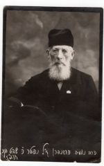 | Нехемий Гершенгорн |
Начну с самого старого из известных мне. Прадед, отец моей бабушки Минны Нехемьевны, папиной матери, носил фамилию Гершенгорн. Сохранились от него фотографии, на одной надпись по-еврейски, только имя и фамилия, зато на второй по-русски: "Дорогим детям на память от родителей. 1910 г.", - хотя на фотографии он именно один, без прабабки. Очень красивый старик. О первой фотографии кое-что Еще я напишу ниже. Еще есть у меня хранимые бабушкой и доставшиеся мне после Яны две фотографии, на которых многолюдная процессия жителей города Кореца, - хоронивших прадеда. Он был там раввином, а занимался ли чем-нибудь еще (как чаще бывало), я не знаю. Чьи именно это похороны, я знаю от Яны, а она непосредственно от бабушки. Думаю, что доверять Яне в этом случае можно.
Есть семейная фотография - с семьями сыновей, т.е. братьев моей бабушки. Но это уже предположительно, да и фотография скверного качества.
Я не знала никого из бабушкиных родственников. Абрам помнит ее брата дядю Исидора (и мама его помнила), отмечает его резкий "местечковый" акцент.
Еще сохранилась в моей памяти прелестная история, рассказанная мне папой. Рассказанная с целью показать, какие здоровые люди бывали в прошлом. Папе было лет 13, у него болели зубы, он пожаловался своему деду. Тот сказал: "Дурак, как же зубы могут болеть? Они же костяные". Впрочем, может быть, прадед просто пошутил? По крайней мере, так считает Абрам.
Перехожу к Рубинштейнам. Деда моего по-русски звали Илья Яковлевич. Есть его послужной список. По нему можно вычислить, что родился он в 1858, но папиной рукой написана дата /V 1856. (В анкете Эдуарда Генриховича, где он должен был написать о родителях своей жены, стоит 1860, местечко Столбцы Минской губернии).
Вот почерпнутое из послужного списка:
Элья Яковлевич Рубинштейн, происходил из Минской губ., местечка Ивенцы (не вполне разборчиво название). Воспитывался в Житомирском еврейском учительском институте, окончил в 1878г., получил звание учителя еврейского начального училища. Служил в училищах, одноклассных и двухклассных, в том числе с 1887 до 1914г. в Виннице. В 1903-06гг. кроме того заведовал вечерними курсами. Основатель первой в Виннице библиотеки, которой заведовал в течение 15 лет (это уже из справки 1926 г, т.е. посмертной, в которой, кстати, стаж работы в Винницком Казенном Еврейском училище сильно преувеличен: с 1875 по 1920г.). На послужном списке, т.е. на его копии, заполненной папиной рукой, стоит штамп: "В пенсии отказано". Это уже около 1920 года. 36-летнего стажа было недостаточно? Отказал Мосгубкомсоцстрах, губернская комиссия по назначению пенсии. Папа счел нужным сохранить этот документ.
От папы я знаю, что отец деда был кузнец, фамилия его была как будто Розовский (полной уверенности у папы не было), он не отпускал сына учиться, как это обычно бывало в патриархальных еврейских семьях. Дед бежал из дома, и какой-то доброжелатель устроил ему документ с новой фамилией. Впрочем, когда я, уже взрослая, спрашивала бабушку, она сказала, что ничего об этой истории не знает. Не хотела говорить или в самом деле не знала? Я уверена, что это не легенда: ни дед, ни папа к мистификациям склонны не были.
О происхождении фамилии Абрам писал мне вот что. "Фамилия Рубинштейн была взята им с целью права выезда из зоны (черты) оседлости. Рубинштейн - фамилия немецких и латышских евреев, на них не все ограничения оседлости распространялись. А Розовский фамилия польских и волынских евреев, они не имели права выезда из губерний Малороссийских и царства Польского".
Принципиального противоречия в этих версиях я не вижу.
Бабушка тоже работала в школе. Цитирую удостоверение, выданное в Виннице в 1920 году:
Настоящее удостоверение выдано гражданке Рубинштейн Мине Нехемiевне, в том, что, как видно из имеющихся в Отделе документов, Рубинштейн состояла заведывающей и содержательницей частного еврейского женского училища своего имени с 1887 года до 1 июля 1917 года, а с 1 ноября 1917 года по 1 декабря 1920 года учительницей начального училища в г.Виннице.
Далее идут подписи. На печати и штампе текст украинский.
Вероятно, заявления о предоставлении пенсии бабушка и не подавала: это было бесполезно, поскольку школа была частная.
| 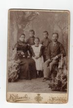 | Минна Нехемьевна, Фима, Туня, Яша, Илья Яковлевич Рубинштейны |
Теперь о детях. Дети были: Этель (Татьяна Ильинична, тетя Туня), 1888г. рождения; Яков, вероятно 1890; Хаим (Ефим), наш папа, 1892; Геня (Евгения Ильинична), 1899; Иосиф (Зезя), 1907г.
Яша умер от холеры, будучи студентом. Большой его фотопортрет всегда висел в бабушкиной комнате на Тверской, теперь он у меня. Прожив всего лет 20, Яша тем не менее успел жениться. Жена его, Белла Борисовна, была сестрой папиного друга Исаака Борисовича Паукмана, который умер в один год с папой, оставив дочь Миру, моего возраста, с которой в последние годы ее жизни подружилась Люба (в последнем телефонном разговоре со мной Мира говорила не о своем состоянии, а расспрашивала о нашей Вере. Это ее характеризует. Она умерла буквально в один день с Верой, 16 мая 2001 года, умерла от рака).
Белла Борисовна Была видимо, старше мужа, но все равно овдовела очень молодой. Фамилию всю жизнь носила Рубинштейн.
Прожила фантастически долгую и активную жизнь. Была она врачом. В 1923 году родила сына Эрика. Отец Эрика обманул ее и очень грубо: у Эрика оказалась "сводная сестра" - ровесница. Белла Борисовна тяжело переживала этот обман. Несмотря на завидную устойчивость нервной системы, она была на грани самоубийства. Она считала, что спас ее мой папа ("Фимочка", она всю жизнь его так называла). Первые от нее письма, которые я помню, папа стал получать в Бродокалмаке, непосредственно после возвращения из заключения, т.е. в 1941г.
Из письма. "23/I 58. Дорогой Фимочка! 26/I произойдет знаменательная дата в моей жизни: Эрику исполнится 35 лет... Я никому не говорила о своих переживаниях. Ты, хотя ничего не знал (мб, ты догадывался), один-единственный человек, пришел ко мне на помощь. Я не помню, сколько денег ты мне дал, но мне хватило на проезд до Харькова и на довольно скромную жизнь в течение месяца, пока я не нашла работу.
Потом уже, когда Эрик родился... (я не помню, писала ли я тебе), но ты узнал об этом и прислал довольно большую сумму, это были первые советские червонцы. Конечно, матерьяльно они мне очень помогли. Но гораздо больше они помогли мне морально...
В общем (хоть и поздно, м.б.) я хочу выразить тебе мою горячую благодарность за твою чуткость и доброе человеческое чувство, кот. ты проявил по отношению ко мне... Я считаю, что не в том дело, что я что-то заслужила, а все дело в тебе".
Эрик носит фамилию своего отца, хотя по законам Российской империи, а также по закону 1944 года "О браке, семье и опеке" он был бы обязан носить фамилию матери. Но родился в промежутке. Он потерял на войне руку. Стал физиком. Но судьба складывалась трудно. Считая, что он не может работать здесь в полную силу, Эрик решил уехать, - в Америку.
Я не бывала у них в Ленинграде, с Эриком и его женой вообще не была знакома, но очень хотела бы, чтобы память о Белле Борисовне пережила меня.
Как и ее сын, Белла Борисовна прошла войну, она - военврачом. После возвращения и реабилитации моих родителей они часто виделись; в Ленинграде у нее гостили и Люба, и Вера. Игорь должен помнить ее внимание, когда он был в Ленинграде. (Узнав, что Игорь в Ленинграде, со школьной экскурсией, Белла Борисовна сама разыскала школу, в которой экскурсанты остановились).
(А Александр Михайлович был так восхищен приемом Беллы Борисовны, что обещал уступить ей собственную кровать, когда она будет в Москве! Шуба с царского плеча).
Белла Борисовна вела очень активный образ жизни, путешествовала по всей стране (Эрик, с одной рукой, водил машину), была - мало сказать самостоятельна, была исключительно бодра, но остаться в Союзе после отъезда Эрика не могла: вся жизнь для нее заключалась в сыне.
Свидетельствую, что уезжать она не хотела, это ее собственные слова.
Уехали: Белла Борисовна на девятом десятке, Эрик с женой, дочерью, сыном и внучкой. Конечно, маме после отъезда она не писала: мама очень порицала ее за отъезд.
Умерла Белла Борисовна в доме престарелых (морально и материально дома престарелых в России и в США отличаются как небо от земли), в столетнем возрасте. (Мира говорила: в 102 года). Попутешествовать по Америке и почувствовать американскую жизнь успела.
Ленинградские же ее письма очень трогательны. Она никогда не забывала годовщины папиной смерти. В письме после поездки Игоря в Ленинград ему посвящены две страницы: сокрушается, что они с ее внуком Аркадием не сошлись, всячески Игоря хвалит. В следующем письме опять извиняется за внука...
Вот и все о Белле Борисовне. Когда она откликалась на смерть моего папы, она естественно вспоминала его брата, своего мужа: "Это очевидно у них семейная черта... вот эти братья особенно любили жизнь, это была их основная черта характера: жизнелюбие".
Вот и все о Яше. Я начала с него, потому что он умер уж очень давно. Память о нем хранила его мать, потом мой папа - лет 60, после всех Белла Борисовна - лет 80. Материальным знаком осталась хорошая, но не вечная фотография и кусок - предположительно - его письма к сестре, Туне. (Я думаю, что ничье другое не хранили бы в семье столько десятилетий). Привожу. Только сначала об орфографии. Естественно, на нынешней клавиатуре нет буквы ять, с этим ничего не поделаешь. Редкая буква i доступна. Если же кто думает, что ъ нужен еще больше, чем ять, то ошибается. И помимо этого письма я знала из литературы, что какая-то часть интеллигенции твердый знак не употребляла из принципа, считая его излишним. Впервые я с этим столкнулась в книге Марка Алданова или может быть Осоргина: там юный герой, по привычке написав ъ, спохватывается и зачеркивает. В Яшином письме твердых знаков не было. Итак.
Харьков 7/IX 08г.
Дорогая Туня! Признаться, с большим нетерпенiем ждал я твоего письма. Я отлично знал, при какой обстановке, безотрадной и непривлекательной, тебе приходится жить, с какими людьми приходится сталкиваться, какую огромную обиду должна ты чувствовать, от того что тебя обстоятельства втолкнули в эту среду - знал все это и поэтому не без основанiя предполагал, что ты с радостью будешь поддерживать переписку со мной, с радостью ухватишься за случай выливать всю злобу и обиду в письмах ко мне, когда чаша переполняется. Мои предположенiя оправдались. С тяжелым чувством читал я твои строки, то голос души, тоскующей по более широкой и интересной жизни, голос человека, пытающегося раздвинуть узкiя рамки, в которыя забросила его безжалостная судьба. Как ни хорошо знал я все это, но все же слишком сильны и горьки твои жалобы, чтоб они не могли тронуть, даже чужого, чуткого человека. Меня также охватило тяжелое чувство обиды и я решил чем только возможно облегчать твою несладкую участь. Я уже сделал одну попытку пристроить тебя здесь в одной аптеке, но к сожаленiю она кончилась неудачей за переполнением всех мест. Но я приложу все свои старанiя, постараюсь познакомиться с некоторыми членами союза фармацевтов, чтоб чрез посредство союза найти тебе место. Не унывай, и на твоей улице засiяет солнце, дай только перетащить тебя в большой город. Там твои личныя занятiя и чтенiе смогут быть более выполнимыми, в виду большаго количества свободнаго времени, там наконец и заживешь интереснее. Главное, будь бодра и живи большими надеждами. Надежды, правда не вечно, скрашивают жизнь и вводят в другую более интересную, они поддерживают в человеке интерес и стремленiе к богатой и широкой жизни. Пока же, ты не теряй безполезно своего досуга, занимайся, читай, а то в этом промозглом углу можно прямо таки отупеть. Обезпечь себе один совершенно свободный день, в другiе дни также старайся оставить себе некоторый досуг для отдыха и занятiй, словом, для жизни для себя. Если у тебя недостаток в книгах или потребность в какой нибудь книге или учебнике, пиши мне, я всеми силами постараюсь удовлетворить твою нужду. Журналы у вас вероятно какiе нибудь есть, доставай их, словом заполняй время наиболее продуктивно. Повторяю, напиши мне, какiя книги тебе хотелось бы читать, что тебе хотелось бы изучать, и я постараюсь этот недостаток твоей жизни устранить. Я посылаю тебе на днях литературно-критический сборник "Литературный распад", представляющий критику современных литературных веянiй. Прочтешь его и найдешь много занимательнаго и прiятнаго. Что же касается другого зла твоей жизни, отсутствiя хороших и интересных людей, с которыми можно было бы отводить душу, то это зло, с которым в таких положенiях приходится мириться. Такую прелесть ты найдешь и в Виннице зимой, хотя она раз в 5 больше и богаче твоей столицы. В таких...
Оставшаяся часть письма утрачена. В какой "столице" жила тогда тетя Туня, я не знаю.
| 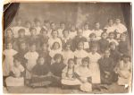 | Минна Нехемьевна Рубинштейн и ее ученицы |
| 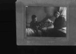 | Минна Нехемьевна Рубинштейн с внуками Яной и Абрамом около 1922 г. |
Следующей после Яши потерей был самый младший папин брат Зезя. Это был очень поздний ребенок, видимо болезненный. Умер в 13-14 лет в Москве, около 1920 года. Есть одна фотография, вместе с сестрой Женей, оба в ученической форме.
Дед умер в 1923г., осталось у бабушки трое детей, были уже и внуки: Абраша и Яна. В это время мои родители и поженились. Жили в большой квартире на Тверской (д.38, а после реконструкции - ул.Горького, 12; но это корпус во дворе).
Вера помнила расположение комнат, Абрам делал даже набросок плана, а я бывала в этой квартире очень часто - уже взрослой, после войны, когда бабушка и тетя Туня занимали в ней только одну комнату.
В 1928 году был построен дом на Остоженке, мы переехали, они остались вдвоем.
Бабушка Минна Нехемьевна была спокойная, уравновешенная, добрая.
Я бы сказала, величественная. Впрочем, общалась я с ней только у нее в гостях. Теперь из папиных Княжпогостских писем я получила более полное представление о ее силе духа.
И не только из Княжпогоста писал папа о ней. Весной 1951г. папа написал нам с Любой письмо из Краснопресненской тюрьмы, надеясь, что, может быть, мы смогли бы придти к нему на свидание. И там писал, что ровно 40 лет назад бабушка приехала из Винницы в Москву, чтобы увидеть его перед отправкой в ссылку. Я цитирую это в своем месте.
В Виннице бабушка тоже была учительницей в еврейской школе (для девочек). Я плохо представляю ее тогдашнюю жизнь, да и московскую тоже. Она воспитывала осиротевшего Абрама, потом жила вдвоем с Туней и у нас не бывала. (На мой вопрос мама ответила: "Да нет, бывала, даже тебе фартучек сшила. Вот Туня действительно не бывала". Это вполне однозначно говорит о том, что за 9 лет бабушка была у нас ровно один раз, с фартучком.
Мы, вероятно, у нее бывали, но исключительно редко. Когда родилась Люба, я по этому поводу прожила у бабушки 2-3 дня (Люба родилась дома, в папином кабинете - мама не терпела больниц).
И вот настал 1936 год - папин арест. Затем наш отъезд. Перед отъездом сходили в фотографию. Бабушка Вера Федоровна отказалась идти, так и не знаю почему. Даже думала, что может быть бабушки не выносили друг друга, - но нет. Осенью 1937 г. бабушка Вера Федоровна описывает в письме к Тане, как "мы с Минной Нехемьевной готовили Абрама в долгий, как потом оказалось, на всю жизнь, путь в Свердловск. Конечно, занимались починкой его гардероба каждая у себя дома, но согласовывали по телефону.
Потом война, эвакуация (в Ташкент, с семьей тети Жени).
В Ташкенте заходила к ним Вера, тоже оказавшаяся в эвакуации в Средней Азии, и тетя Туня жаловалась Вере на грубость Эдуарда и что все лучшее - не бабушке, а Яне ("расскажи Фимочке!"). Но сама бабушка, конечно, не жаловалась.
Естественно, Вера рассказала папе, но что он мог сделать? Укорять Женю?
Я не помню, как папа внешне реагировал на Верин рассказ. Видимо, не помню именно потому, что внешней реакции и не было. Это папин стиль.
... Потом жизнь в Москве, очень краткое и неудачное замужество тети Туни, о котором постарались скорее забыть. Бабушка тогда писала: "Я рада, что Туня не останется одна". Ошибка была двойная, потому что бабушка Туню пережила.
В 1945 я вернулась в Москву, бывала у них часто, но сейчас отдаю себе отчет, что не сумею ничего яркого рассказать, а бабушка этого безусловно стоила.
Впрочем, вот вставка 2002 года. Я обнаружила свой студенческий блокнотик 1949 года. Цитирую буквально. "ДОЛГО У БАБУШКИ СИДЕЛА, ТАМ БЫЛА МАР.СОЛ. (не помню, о ком речь) - ЗДОРОВО МНЕ НРАВИТСЯ. А КАКАЯ У МЕНЯ БАБУШКА! И БЕЗ ВСЯКИХ КОНТРАСТОВ ВИДНО, ЧТО ЭТО ЧУДО - В ТАКОМ ВОЗРАСТЕ ТАКАЯ ЯСНАЯ ГОЛОВА, ЧУВСТВО ЮМОРА, ЧУВСТВО СОБСТВЕННОГО ДОСТОИНСТВА, СДЕРЖАННОСТЬ И ВЫДЕРЖКА, ОТНОШЕНИЕ К ЛЮДЯМ - СТАРШЕЙ, БОЛЕЕ УМНОЙ, БОЛЕЕ ОПЫТНОЙ И ПОТОМУ СИЛЬНОЙ! НО ПО КОНТРАСТУ ЕЩЕ ЯСНЕЕ ВИДНО".
Этот свой листочек из блокнота я переслала Абраму. Кстати, он как раз впервые после 1937 года приезжал в Москву именно тогда, в 1949-м. Останавливался у бабушки. Виделся с мамой, приезжавшей из Кондрова. Ездил в Кондрово повидаться с папой.
Тетя Туня работала в аптеке, потом была на пенсии, тяжело болела, лишилась глаза.
И вот новый удар: второй арест папы. Мама едет за ним в ссылку. Бабушка пишет папе:
"Вот уже несколько дней, как М. в М. (Муся в Москве), приходит к нам почти каждый день. С трепетом вспоминаем, что вот-вот она уедет от нас, и мы ее больше не увидим, и тебя, родной наш, никогда больше не увидим. (Бабушке было 85 лет). Как это тяжело, как грустно. Единственное остается получать письма... знать хоть издали, что живы и здоровы и что живется неплохо. Я уже очень стара, сколько буду тянуть, неизвестно. Моя мечта, чтобы вы устроились и жили вместе счастливо. Ты должен быть счастлив, что имеешь такого преданного и заботливого друга".
Далее продолжает тетя Туня: "18/IX 51. Дорогой Фима. Мама не может писать, тк у нее сломались очки. Иду сейчас ей купить. Напишет скоро. Рады, что Муся едет к тебе. Завтра вероятно провожаю Мусю..."
Затем: "27/IX 51. Вчера 26/IX в среду получила твою телеграмму, Мусенька... Мама еще во вторник заболела. Я вызвала врача, и он назначил ей уколы камфоры... Фима, поздравляю тебя с приездом гостьи... Пожелайте нам, чтобы мама скорее поправилась. Я делаю все, что могу... Мама прибавила "даже больше". Сейчас это для меня самое главное, чтоб она стала снова на ноги... Ваша Бабушка встала на ноги, а вот тетя Туня очень скоро заболела и умерла (болела 12-22/XI). Было у нее воспаление почек. Я отвезла ее на такси в больницу далеко на окраине. Не могу вспомнить, в какую, это были совершенно незнакомые мне места. Тетя Туня была без сознания, в таком состоянии я ее и оставила.
Бабушку отвезли к тете Жене. Есть письмо, которое бабушка продиктовала (23 дек.), но есть и собственноручное. "Дорогие мои! Получили твое, Фимочка, письмо, рады, что ты и Мусенька здоровы и что все у вас благополучно. Наше горе и наше несчастье до того велико, что трудно перенести его. Я креплюсь, сколько возможно, чтобы не огорчать своих дорогих детей...
Пишите, родные, чаще, может это утешит меня, несчастную мать...
Любящая вас мать. М.Рубинштейн".
Я выпустила кое-что. Подпись похожа на папину. Почерк ужасен, но не хуже, чем в сентябрьском письме. Запятые все на месте.
Февральское письмо (это уже 1952) - опять под диктовку. Но несколько строк приписано: "Очень рада, когда получаем от вас письма, что у вас все здоровы и все более или менее благополучно. Я себя чувствую средне... Жду ваших писем. Это для меня большое удовольствие. МАМА".
Последняя болезнь настигла бабушку в начале марта, и 12 мая она умерла. Эти два месяца она страдала расстройством психики; накануне 1 мая был инсульт, через несколько дней сознание к ней вернулось, умерла она спокойно, во сне.
Тетя Женя писала папе: "Мама наша прожила большую, честную хорошую жизнь, и любима не только родными, но и всеми окружающими".
Елизавета Григорьевна Бриллиант писала: "Я тоже потеряла близкого друга - меня с мамочкой связывала большая полоса жизни. Потеряла в ней чуткого и светлого человека... Шлю горячий привет и пожелание дожить до мамочкиных лет - тогда, пожалуй, еще встретимся!"
Смерть Сталина позволила увидеться раньше, но ведь мы все подсознательно считали его бессмертным.
Осталось рассказать о тете Жене.
В моих руках метрическое свидетельство. Копия, но тоже очень старая - снятая в 1915г.
"Дано сие от Казенного раввина Винницкого участка в том, что в метрической книге о родившихся евреях города Винницы Винницкого уезда за 1899 год под N96 женск.гр. записан акт следующего содержания: Тысяча восемьсот девяносто девятого года десятого дня сентября месяца у Илья Яковлевич Рубинштейн учитель Казенного евр. училища, от жены Мина родилась дочь Геня. (Именительный падеж применялся, видимо, во избежание разночтений, мне уже приходилось с этим сталкиваться. - Н.М.). Свидетельство сие выдано для представления в учебное заведение. Чем подписью и печатью удостоверяю Июня 9 дня 1904г. Казенный раввин Винницкого участка (подпись)".
Далее член Городской Управы удостоверяет в 1909г., что это свидетельство согласно с записью в книге.
Далее нотариус удостоверяет верность и то, что исправлены окончания (на именит. падеж). Фамилия нотариуса Иппа.
Как и на трудовых книжках, например, папы, тети Маруси, как на бабушкином удостоверении личности, на этой копии стоит штамп о выдаче паспорта в 1933 г.
Далее есть документ ("копия с копии"), называемый "Определение". В 1952 г. суд устанавливает тождество имени, т.е. что Геня и Евгения Ильинишна (первое время отчество так писалось) - одно лицо. Это определение понадобилось для получения в сберкассе денежного вклада умершей тети Туни.
(Кстати - от тети Туни не осталось ни единого документа! Не Бог решает, оказывается, - о ком оставить материальную память, а кто этого недостоин, тетя Женя решала. Единственная бумажка - сохранившийся фрагмент письма, написанного Туне в начале века. Предположительно письмо от брата Яши, но мб, от какого-нб двоюродного).
Продолжаю об успешной тете Жене.
Аттестат об окончании гимназии: поступила в приготовительный по экзамену в августе 1909г., в 1917г. оказала следующие познания... (пятерки по обязательным предметам, четверки по необязательным - по языкам и рисованию). Право на золотую медаль.
(На бланке аттестата напечатаны "Правила и обязанности домашних учительниц", сами по себе очень интересные: по выслуге 20 лет воспользоваться пенсией или вступить в дом призрения бедных девиц благородного звания на казенное содержание, преимущественно перед теми, кои образаванием детей не занимались. Но это к слову).
Есть и удостоверение об окончании 8-го дополнительного общеобразовательного класса в 1918г., на простой бумажке с печатью, а кроме того "Временное свидетельство" на типографском бланке.
Уже в начале 1919г. Женя в партии, работает в Виннице в агитпросвете, потом в Киеве до ухода последних частей Красной Армии (в августе 1919), потом в подполье в г.Каменец (позже это город Каменец-Подольский).
Об этом есть справка:
Характеристика
Дана т.Жене Рубинштейн, как активной участнице подпольной партработы в г.Каменец-Подольске организации КП(б)У в период конец 1919 и до момента ухода белополяков из г.Каменца в начале июня 1920г. являвшейся членом этой парторганизации и самоотверженно выполнявшей все задания большевистского партруководства по линии женработы и среди студенчества "Державного университета", а также др. работы.
Перед вступлением Красной Армии в г.Каменец т.Женя была арестована с группой партийцев польской охранкой ("дефензивой") и вывезена в тюрьмы Польши, что удостоверяю, как командированный ЦК КП(б)У в 1919г. быв.пред.Ревкома в г.Каменец.
Подпись: Петров-Губиш. Партстаж 1917. п/б N0458524. 10/XII 1935г.
Пребывание в польских тюрьмах тетя Женя живо описала в воспоминаниях о Вере Костшеве, написанных по просьбе польского журнала, а предшествующие события - в воспоминаниях, опубликованных в журнале "Летопись революции" в 1926г. (есть извлечение). Видимо, журнал был недоступен простому читателю, но тетя Женя, будучи историком, смогла снять копию, заверенную "хранителем фондов партактива", в 1958г. Читается, как роман: арест петлюровцами, освобождение, агитация, издательская деятельность, переход фронта, сыпной тиф, психиатрическая лечебница (?), арест...
Весной 1921г. был произведен обмен пленными, и Женя вернулась.
Затем она училась в Коммунистическом университете им.Свердлова. От этого времени есть подлинный бланк Всероссийской переписи членов РКП(б) 1922 г.
В том же 1922г. - свидетельство о браке. Якобы приняли фамилию Цельмины-Рубинштейны (но фактически каждый продолжал носить свою).
В том же году - рождение Яны. В следующем году - двухгодичный курс университета закончен, Женя направлена в Крым, преподавать в совпартшколе, там работает до 1929 г., возвращается в Москву, поступает в Институт Красной Профессуры, заканчивает его, но при этом уже на первом году учебы преподает историю Западной Европы в Райкомвузе Замоскворецкого района.
К удостоверению об окончании Лекторского курса Комм.Унив. им.Я.М.Свердлова есть "Приложение", т.е. характеристика. Еще больше, чем тетю Женю, она характеризует тогдашнее отношение к характеристикам и к кадрам.
Член РКП с 1919. Еврейка. Интеллигентка.
Партийная характ. Активность в Ун-те малая, ввиду болезни.
Дисциплинирована. Уклонов нет. Тов. в массовой работе не принимала участия и нуждается в таковой.
Специальность - История Запада.
Учебная характ. Общеобразовательная подготовка выше среднего. Марксистская подготовка - средняя. Степень знания своего предмета - средняя, - при хороших способностях и несистематической работе, вследствии болезни. Педагогические способности выше среднего.
Лучший кружковод, чем лектор. Популярно излагает материал. Уклон педагогический и политико-просветит.работе. Кружковод областной школы или лектор губернской.
Подписи: ректор, зав лекторским курсом (Б.Гессен), секретарь бюро ячеек и секретарь университета.
Еще одна справка ("Свидетельство", на бланке) говорит, что во время пребывания в Крыму тетя Женя делала попытку учиться в Крымском пед.ин-те им. Фрунзе.
В общем - жизнь идет очень целенаправленно. После ИКП - научный работник в институте Маркса-Энгельса-Ленина, с 1935г. кандидат наук. По совместительству Академия Коммунистического воспитания, Высшая партийная школа, Московский пед. институт, МГУ, недолгое преподавание в ИКП. С 1938 г. - в Институте истории Академии наук.
Во время войны - эвакуация - в Ташкент, но ненадолго. Опять работа и тихая жизнь, - глядя на тетю Женю, представить себе ее бурную молодость было трудно.
Когда я вернулась в Москву, жила ее семья в Воротниковском переулке. После смерти тети Туни бабушку взяли к себе. Бабушка прожила еще полгода, последние два месяца - лежачая. Комнату ее на Тверской сохранить не сумели. Я бы, вероятно, и не задумалась об этом, но помню, как Александр Аронович Фридман сказал: "Женя - дура".
(Написала я это и вижу, что против воли создаю неверное впечатление об Александре Ароновиче. На самом деле слова сказанные и слова написанные имеют разную валентность, не говоря даже о контексте. И дурой он Женю не считал, и сам не был таким уж материалистом. К тому же, "квартирный вопрос" - проклятие, тяготеющее у нас до сих пор над огромным количеством людей. Мне не пришлось жить в коммуналке никогда, а среди моих послевоенных знакомых - людей с такой же счастливой судьбой не было вообще ни одного).
Тетю Женю, видимо, в ученом мире ценили, заказывали ей всякие статьи, писали хорошие рецензии, печаталась она и за рубежом и, например, в ташкентской газете, и в журналах, и писала главы для учебников и т.д.
На моей памяти - две большие книги: "Политика германского империализма в западных польских землях в конце XIX - начале XX века" и "Крушение Австро-Венгерской монархии". Первая вышла в 1953, подарена мне с ласковой надписью. Она переведена на польский язык, там автор ошибочно названа Еленой. Вторая книга вышла в 1963.
Была тетя Женя в обращении всегда очень ласкова, но я как-то не могу назвать ее добрым человеком. Недобрым, впрочем, тоже.
Ей было что терять, поэтому естественно, что контактов с папой она боялась. Через меня передала в Сибирь тулуп для папы, пару раз деньги. Позже папа выражал неудовольствие тем, как тетя Женя распорядилась бабушкиным наследством, но я уверена, что ей самой не говорил ничего. О бабушкиной смерти (а ранее - о смерти тети Туни) сообщили папе странными анонимными письмами; своей рукой тетя Женя не писала, подписывали "ваши родные".
Порицать не приходится, ничего постыдного совершено не было. Уже и это неплохо по тогдашнему времени.
Жили впятером - когда у Яны был муж, - т.е. четверо плюс домработница - в одной, разгороженной комнате. Улучшения не дождались; сами обменяли на квартиру. Пожила тетя Женя в ней уже недолго и умерла в 1970 году.
Яна считала, что ей сделали по ошибке не тот укол (в больнице), я этого тоже не исключаю. Так или иначе, а смерть была совершенно неожиданной и мгновенной.
Собравшиеся старые друзья очень хорошо ее вспоминали, называя "Женя Рубинштейн".
Вношу сюда некролог. Где опубликован - не знаю; у меня машинописный экземпляр, на очень хорошей бумаге, но зато третья, если не четвертая копия.
ЕВГЕНИЯ ИЛЬИНИЧНА РУБИНШТЕЙН (1899-1970).
Скончалась Евгения Ильинична Рубинштейн (29 октября 1970г.), видный советский историк, доктор исторических наук, автор многих исследований по истории Австро-Венгрии, Польши, Германии.
Евгения Ильинична Рубинштейн родилась в г.Виннице в 1899г. в семье учителя начальной школы. Ее юность началась в годы революции и гражданской войны.
Молодой девушкой, почти сейчас же после окончания гимназии она вступила в ряды партии большевиков и оставалась настоящим коммунистом до последнего часа. В тяжелый момент, когда белополяки оккупировали Западную Украину, Евгения Ильинична работала в подпольной большевистской организации в г.Каменец-Подольском (с октября 1919 г. по июнь 1920 г.): распространяла листовки, участвовала в издании подпольной газеты "Большевик". Отступавшие под натиском Красной Армии польские интервенты арестовали и вывезли в Польшу в качестве заложников группу советских граждан. Среди арестованных была и Е.И.Рубинштейн. Вместе со своими товарищами в тюрьмах Львова, Варшавы, Вронина (Познань), в лагерях Шрем и Домбие она подвергалась истязаниям и избиениям на допросах. В апреле-мае 1921 года по официальному обмену советских коммунистов на группу польских офицеров Евгения Ильинична была возвращена на родину. Начались годы учения и упорного труда.
После окончания в 1923 году Университета им.Свердлова Евгения Ильинична работала в Симферополе лектором областной Совпартшколы. Ее старые товарищи по работе в Крыму сохранили о ней самые теплые воспоминания.
С 1929 по 1932 гг. Евгения Ильинична училась в Институте красной профессуры, затем была направлена на работу в Институт Маркса-Энгельса-Ленина старшим научным сотрудником. Научную деятельность она совмещала с преподавательской работой в Академии им.Н.К.Крупской, ИКП подготовки кадров и др.
В 1938 году она перешла на работу в Институт истории АН СССР, с которым она связала всю свою дальнейшую жизнь. Работая старшим научным сотрудником сектора новой истории, Е.И.Рубинштейн некоторое время руководила им. Здесь же она написала основные свои труды - две большие монографии, участвовала в коллективных трудах института "Всемирная история" т.VI и т.VII, "Революции 1848-1849 гг", "История второго Интернационала", "Новая история" т.II, работала в редколлегии "Ученых записок по новой и новейшей истории" и т.д. В Инститтуте истории она защищала докторскую диссертацию по теме "Политика германского национализма в западных польских землях", которая в 1953 году вышла в свет отдельной книгой.
Широкую известность и признание получили как у нас в стране так и за рубежом крупные монографические исследования Е.И.Рубинштейн: "Политика германского империализма в западных польских землях" и "Крах Австро-венгерской монархии". В этих работах с особой наглядностью проявились присущие Евгении Ильиничне как историку-марксисту качества - стремление к максимально полному и всестороннему выявлению решающей роли народных масс в историческом процессе, и прежде всего рабочего класса, объективное строго научное и партийное освещение роли классовой борьбы, классов и партий, и в частности борьбы двух тенденций в рабочем движении, уважение к источникам, сочетающиеся с весьма критическим к ним отношением. (Это последнее замечание, как кажется мне, говорит о высоком уровне авторов этого текста. Н.М.)
С особой тщательностью в работах Е.И.Рубинштейн прослеживается деятельность революционных сил международного рабочего движения, левых в венгерской, польской, чешской социал-демократии, австрийских радикалов и спартаковцев в Германии. Вместе с покойным Л.И.Зубаком Евгения Ильинична вложила большой труд и немало душевных сил в подготовку двухтомной монографии "История Второго Интернационала", вышедшей из печати в 1964 году (в качестве члена редколлегии и автора ряда важных разделов).
Наиболее отличительная черта Е.И.Рубинштейн и как историка, и как коммуниста и человека - исключительное, можно сказать беспощадно-суровое отношение к себе и к собственной работе. Такой она оставалась до последних дней своей жизни. Будучи в течение многих лет тяжело больным человеком и находясь уже на пенсии, она продолжала трудиться с прежнею энергией и настойчивостью. В самое последнее время Е.И.Рубинштейн вносила исправления и совершенствовала текст главы, написанной ею для коллективного труда по истории Венгрии, хотя эта работа давно была обсуждена и признана одной из лучших в томе.
Несмотря на слабое здоровье, подорванное еще в молодости, Евгения Ильинична всю жизнь вела большую общественную и партийную работу: в 1934-1938 гг. была депутатом Фрунзенского райсовета г.Москвы. В 1954 г. она была награждена орденом Трудового Красного знамени.
Человек необыкновенной скромности, очень сдержанная, Евгения Ильинична отличалась огромным мужеством, целеустремленностью и при этом мягкостью и отзывчивостью в отношениях с людьми.
Товарищей и коллег, близко знавших ее, всегда поражала исключительная теплота, сердечность и простота Евгении Ильиничны. Она всегда останется в памяти всех ее друзей.
Глубоко порядочный человек, труженик, принципиальный товарищ и коммунист старой большевистской закалки - таков облик ушедшей от нас Е.И.Рубинштейн.
Группа товарищей. (Белявская И.А., Исламов Т.М.)
Любовь Пантелеймоновна Краузе (урожд. Афанасьева, по первому мужу Тамм) - моя прапрабабушка.
Павел Пантелеймонович Афанасьев (1865-1949) - брат Любови Пантелеймоновны, офицер; учился в Михайловском Воронежском кадетском корпусе; во время I Мировой войны командовал 316-м и 313-м полками, награжден Георгиевским оружием; также участвовал в Русско-Японской и Гражданской (на стороне белых) войнах. Умер в эмиграции в Штробле (Австрия).
Вера Федоровна Гар (урожд. Тамм) (1869-1942) - моя прабабушка, дочь Теодора и Любови Пантелеймоновны Таммов.
Евгений Федорович Тамм (1867-1947) - сын Теодора и Любови Пантелеймоновны Таммов; городской инженер в Елисаветграде (сейчас Кропивницкий); отец академика И.Е.Тамма.
Мария Карловна Павлова (урожд. Краузе) (1881-1968) - дочь Любови Пантелеймоновны и Карла Карловича Краузе.
Аркадий Лукьянович Гар (1867-1919) - мой прадед, сын Софьи Моисеевны и Лукьяна Михайловича Гаров.
Мария Аркадьевна Смушкова (1893-1986) - моя бабушка, дочь Веры Федоровны и Аркадия Лукьяновича Гаров.
Людмила Аркадьевна Гар (1900-1970) - дочь Веры Федоровны и Аркадия Лукьяновича Гаров.
Константин Аркадьевич Гар (1910-1986) - сын Веры Федоровны и Аркадия Лукьяновича Гаров.
Вадим Васильевич Смушков (1894-1937) - первый муж моей бабушки Марии Аркадьевны Смушковой. Погиб во время Большого террора.
Михаил Кузьмич Гребенча (1897-1948) - двоюродный брат Вадима Васильевича Смушкова, сын Кузьмы Илларионовича и Марии Викторовны (урожд. Воронковской); профессор-математик.
Минна Нехемьевна Рубинштейн (урожд. Гершенгорн) - моя прабабушка.
Ефим Ильич Рубинштейн (1892-1969) - мой дед, сын Минны Нехемьевны и Ильи Яковлевича Рубинштейнов. Овдовел в 1920г.; в 1924г. женился на Марии Аркадьевне Смушковой.
Абрам Ефимович Рубинштейн (1919-2011) - сын Ефима Ильича и Клары Абрамовны (урожд. Долгиной).; горный инженер в Артемовском (Свердловская обл.).
этель Ильинична Рубинштейн (1888-1951) - сестра Ефима Ильича Рубинштейна.
Евгения Ильинична Рубинштейн (1899-1970) - сестра Ефима Ильича Рубинштейна.
Эдуард Генрихович Цельмин (1901-1975) - муж Евгении Ильиничны Рубинштейн.
Яна Эдуардовна Подольная (урожд. Цельмина) (1922-1988) - дочь Евгении Ильиничны Рубинштейн и Эдуарда Генриховича Цельмина.
Игорь Евгеньевич Тамм (1895-1971) - сын Евгения Федоровича Тамма и Ольги Михайловны Тамм (урожд. Давыдовой); физик, лауриат Нобелевской премии 1958 года.
Ирина Игоревна Тамм (1921-2009) - дочь Игоря Евгеньевича Тамма и Натальи Васильевны Тамм (урожд. Шуйской).
Леонид Игоревич Верещинский (1949-2016) - сын Ирины Игоревны Тамм.
Александра Ивановна Орловская (урожд. Гар) - двоюродная сестра Марии Аркадьевны Смушковой.
Вера Вадимовна Долматова (урожд. Смушкова) (1917-2001) - дочь Марии Аркадьевны и Вадима Васильевича Смушковых.
Николай Яковлевич Долматов (1917-2006) - муж Веры Вадимовны.
Татьяна Вадимовна Смушкова (1921-1957) - дочь Марии Аркадьевны и Вадима Васильевича Смушковых.
Надежда Ефимовна Миклашевская (урожд. Рубинштейн) (1925-2019) - моя мама, дочь Марии Аркадьевны Смушковой и Ефима Ильича Рубинштейна, автор этих записок.
Роман Иванович Миклашевский (1929-1999) - мой отец, муж Н.Е.Миклашевской, солдат Армии Краевой, узник ГУЛага, почетный строитель г. Москвы.
Любовь Ефимовна Рубинштейн (1931-2015) - дочь Марии Аркадьевны Смушковой и Ефима Ильича Рубинштейна.
Александр Михайлович Ластухин (1923-1992) - муж Любови Ефимовны Рубинштейн.
Татьяна Константиновна Гар (1939-2020) - дочь Анны Сергеевны и Константина Аркадьевича Гаров.
Игорь Романович Миклашевский - мой брат, сын Романа Ивановича и Надежды Ефимовны Миклашевских. Александр Аронович Фридман, его жена Вера Григорьевна и ее старшая сестра Елизавета Григорьевна Бриллиант - старые друзья Ефима Ильича Рубинштейна.
Клавдия Ивановна Афанасьева - портниха.
Надежда Константиновна Крупская (1869-1939) - жена В.И.Ленина, после революции возглавляла Главполитпросвет - подразделение Наркомпросса, где работала с 1919г. Мария Аркадьевна Смушкова.
Княжпогост - поселок в республике Коми, где (а также в пос. Вожаель) в 1936-41г. отбывал лагерный срок Ефим Ильич Рубинштейн.
Бродокалмак - село в Челябинской области, где находились в ссылке Мария Аркадьевна Смушкова (в 1937-47г.) и Ефим Ильич Рубинштейн (в 1941-47г. - после лагеря), и их младшие дочери.
Кондрово - город в Калужской области, где в 1947-50г. находились в ссылке Ефим Ильич Рубинштейн и Мария Аркадьевна Смушкова (в 1951г. Ефим Ильич был снова арестован и сослан в Красноярский край, куда за ним поехала и Мария Аркадьевна).
Н.Е. Миклашевская. Ефим Ильич Рубинштейн
Н.Е. Миклашевская. Вадим Васильевич Смушков
Н.Е. Миклашевская. Игорь Евгеньевич Тамм
Н.Е. Миклашевская. Бродокалмак
Главная страница сайта
Последнее изменение страницы 11 Jul 2023
{kind=link}
{kind=link}
{kind=link}
{kind=link}
{kind=link}
{kind=link}
{kind=link}
{kind=link}
{kind=link}
{kind=link}
{kind=link}
{kind=link}
{kind=link}
{kind=link}
{kind=link}
{kind=link}